get_homologues manual
Bruno Contreras-Moreira (1,2) and Pablo Vinuesa (3)
1. Fundación ARAID
and 2. Estación Experimental de Aula Dei-CSIC
3. Centro de Ciencias Genómicas, Universidad Nacional Autónoma de México
This document describes the software get_homologues and provides a few examples on how to install and use it.
get_homologues is mainly written in the Perl programming language and includes several algorithms
designed for three main tasks:
- Clustering protein and nucleotide sequences in homologous (possibly orthologous) groups, on the grounds of sequence similarity.
- Identification of orthologous groups of intergenic regions, flanked by orthologous open reading frames (ORFs),
conserved across related genomes.
- Definition of pan- and core-genomes by calculation of overlapping sets of proteins.
While the program was mainly developed for the study of bacterial genomes in GenBank format,
it can also be applied to eukaryotic sets of sequences, although in this case the meaning of terms such as core-
or pan-genome might change, and intergenic regions might be much larger.
The twin
manual_get_homologues-est.pdf
file describes the specific options of get_homologues-est,
designed and tested for the task of clustering transcripts and, more generally, DNA-sequences of strains of the same species.
2 Requirements and installation
get_homologues.pl is a Perl5 program bundled with a few binary files.
The software has been tested on 64-bit Linux boxes, and on Intel MacOSX 10.11.1 systems.
Therefore, a Perl5 interpreter is needed to run this software, which
is usually installed by default on these operating systems. In addition, the package includes a few extra scripts
which can be useful for downloading GenBank files and for the analysis of the results.
In order to install and test this software please follow these steps:
- Unpack the software with:
$ tar xvfz get_homologues_X.Y.tgz
$ cd get_homologues_X.Y
$ ./install.pl
Please follow the indications in case some required part is missing.
- Type
$ ./get_homologues.pl -v which will tell exactly which features are available.
- Test the main Perl script, named
get_homologues.pl, with the included sample input folder sample_buch_fasta
by means of the instruction:
$ ./get_homologues.pl -d sample_buch_fasta .
You should get an output similar to the contents of file sample_output.txt.
- Optionally modify your
$PATH environment variable to include get_homologues.pl.
Please copy the following lines to the .bash_profile or
.bashrc files, found in your home directory, replacing [INSTALL_PATH] by the full path of the installation folder:
export GETHOMS=[INSTALL_PATH]/get_homologues_X.Y
export PATH=${GETHOMS}/:${PATH}
This change will be effective in a new terminal or after running: $ source ~/.bash_profile
The rest of this section might be safely skipped if installation went fine,
it was written to help solve installation problems.
2.1 Perl modules
A few Perl core modules are required by the get_homologues.pl script, which should be
already installed on your system: Cwd, FindBin, File::Basename, File::Spec, File::Temp, FileHandle, List::Util,
Getopt::Std, Benchmark and Storable.
In addition, the Bio::Seq, Bio::SeqIO, Bio::Graphics and Bio::SeqFeature::Generic
modules from the Bioperl
collection,
and module <844>>http://search.cpan.org/perldoc?Parallelare also required, and have been included in the get_homologues bundle for your convenience.
Should this version of BioPerl fail in your system (as diagnosed by install.pl)
it might be necessary to install it from scratch.
However, before trying to download it, you might want to check whether
it is already living on your system, by typing on the terminal:
$ perl -MBio::Root::Version -e 'print $Bio::Root::Version::VERSION'
If you get a message Can't locate Bio/Root/Version... then you need to actually install it, which
can sometimes become troublesome due to failed dependencies. For this reason usually the easiest way of
installing it, provided that you have root privileges,
it is to use the software manager of your Linux distribution (such as synaptic/apt-get
in Ubuntu, yum in Fedora or YaST in openSUSE). If you prefer the terminal please use the
cpan program with administrator privileges (sudo in Ubuntu):
$ cpan -i C/CJ/CJFIELDS/BioPerl-1.6.1.tar.gz
This form should be also valid:
$ perl -MCPAN -e 'install C/CJ/CJFIELDS/BioPerl-1.6.1.tar.gz'
Please check this tutorial
if you need further help.
The accompanying script download_genomes_ncbi.pl imports File::Fetch, which
should be bundled by default as well. In case it is missing on your Fedora systems, it can be installed
as root with: $ yum install perl-File-Fetch
2.2 Required binaries
The Perl script install.pl, already mentioned in section 2, checks whether the included
precompiled binaries for COGtriangles,
hmmer, MCL
and BLAST
are in place and ready to be used by get_homologues. However, if any of these binaries fails to work in
your system, perhaps due a different architecture or due to missing libraries, it will be necessary to obtain
an appropriate version for your system or to compile them with your own compiler.
In order to compile MCL the GNU gcc compiler is required, although it should most certainly already be
installed on your system. If not, you might install it by any of the alternatives listed in section 2.1.
For instance, in Ubuntu this works well: $ sudo apt-get install gcc . The compilation steps are
as follows:
$ cd bin/mcl-14-137;
$ ./configure`;
$ make
To compile COGtriangles the GNU g++ compiler is required. You should obtain it by any of the alternatives listed in section 2.1.
The compilation would then include several steps:
$cd bin/COGsoft;
$cd COGlse; make;
$cd ../COGmakehash;make;
$cd ../COGreadblast;make;
$cd ../COGtriangles;make
Regarding BLAST, get_homologues uses BLAST+ binaries, which
can be easily downloaded from the NCBI FTP
site.
The packed binaries are blastp and makeblastdb from version ncbi-blast-2.2.27+. If these do
not work in your machine or your prefer to use older BLAST versions, then it will be necessary to
edit file lib/phyTools.pm. First, environmental variable $ENV{'BLAST_PATH'} needs to be set to
the right path in your system (inside subroutine sub set_phyTools_env).
Variables $ENV{'EXE_BLASTP'} and $ENV{'EXE_FORMATDB'} also need to be changed to the appropriate
BLAST binaries, which are respectively blastall and formatdb.
2.3 Optional software dependencies
It is possible to make use of get_homologues on a computer farm or high-performance computing cluster
managed by gridengine. In particular we have tested this feature with
versions GE 6.0u8, 6.2u4, 2011.11p1
invoking the program with option -m cluster.
For this command to work it might be necessary to edit the get_homologues.pl file and add the right
path to set global variable $SGEPATH. To find out the installation path of your SGE installation
you might try the next terminal command: $ which qsub
In case you have access to a multi-core computer you can follow the steps at
http://bioinfoperl.blogspot.com.es/2015/04/howto-install-grid-engine-on-multi-core-box-gethomologues.html
to set up your own Grid Engine cluster and speed up your calculations.
For cluster-based operations three bundled Perl scripts are invoked:
_cluster_makeHomolog.pl, _cluster_makeInparalog.pl and _cluster_makeOrtholog.pl .
It is also possible to invoke Pfam domain scanning from get_homologues. This option
requires the bundled binary hmmscan, which is part of the HMMER3
package,
whose path is set in file lib/phyTools.pm (variable $ENV{'EXE_HMMPFAM'}).
Should this binary not work in your system, a fresh install might be the solution, say in /your/path/hmmer-3.1b2/.
In this case you'll have to edit file lib/phyTools.pm and modify the relevant:
if( ! defined($ENV{'EXE_HMMPFAM'}) )
{
$ENV{'EXE_HMMPFAM'} = '/your/path/hmmer-3.1b2/src/hmmscan --noali --acc --cut_ga ';
}
The Pfam HMM library is also required and the install.pl script should take care of it.
However, you can manually download it from the appropriate
Pfam FTP site.
This file needs to be decompressed, either in the default db folder or in any other location,
and then it should be formatted with the program hmmpress, which is also part of the
HMMER3 package. A valid command sequence could be:
$ cd db;
$ wget ftp://ftp.sanger.ac.uk/pub/databases/Pfam/current_release/Pfam-A.hmm.gz .;
$ gunzip Pfam-A.hmm.gz;
$ /your/path/hmmer-3.1b2/src/hmmpress Pfam-A.hmm
Finally, you'll need to edit file lib/phyTools.pm and modify the relevant line to:
if( ! defined($ENV{"PFAMDB"}) ){ $ENV{"PFAMDB"} = "db/Pfam-A.hmm"; }
In order to reduce the memory footprint of get_homologues it is possible to take advantage of the
Berkeley_DB
database engine, which requires Perl core module
DB_File, which should be installed on all major Linux distributions.
Similarly, in order to take full advantage of the accompanying script parse_pangenome_matrix.pl,
particularly for option -p, the installation of module GD
is recommended.
An easy way to install them, provided that you have administrator privileges,
is with help from the software manager of your Linux distribution (such as synaptic/apt-get
in Ubuntu, yum in Fedora or YaST in openSUSE).
This can usually be done on the terminal as well, in different forms:
$ sudo apt-get -y install libgd-gd2-perl # Ubuntu/Debian-based distros
$ yum -y install perl-GD # Redhat and derived distros
$ zypper --assume-yes install perl-GD # SuSE
$ cpan -i GD # will require administrator privileges (sudo)
$ perl -MCPAN -e 'install GD' # will require administrator privileges (sudo)
The installation of perl-GD on macOSX systems is known to be troublesome.
The accompanying scripts compare_clusters.pl, plot_pancore_matrix.pl, parse_pangenome_matrix.pl,
plot_matrix_heatmap.sh, hcluster_matrix.sh require the installation of the statistical software
R,
which usually is listed by software managers in all major Linux distributions.
In some cases (some SuSE versions
and
some Redhat-like distros)
it will be necessary to add a repository to your package manager.
R can be installed from the terminal:
$ sudo apt-get -y install r-base r-base-dev # Ubuntu/Debian-based distros
$ yum -y install R # RedHat and derived distros
$ zypper --assume-yes R-patched R-patched-devel # Suse
Please visit CRAN
to download and install R on macOSX systems, which is straightforward.
In addition to R itself, plot_matrix_heatmap.sh and hcluster_matrix.sh require some R packages to run,
which can be easily installed from the R command line with:
> install.packages(c("ape", "gplots", "cluster"), dependencies=TRUE)
The script compare_clusters.pl might require the installation of program PARS from the
PHYLIP suite, which should be already bundled
with your copy of get_homologues.
Finally, download_genomes_ncbi.pl might require wget in order to download WGS genomes,
but should be installed on most systems.
This section describes the available options for the get_homologues software.
3.1 Input data
The input required to run get_homologues can be of two types:
- 1
- A single file with amino acid sequences in FASTA format,
in which headers include a taxon name between square brackets, including at least two words
and a first capital letter, as shown in the example:
>protein 123 [Species 1]
MANILLLDNIDSFTYNLVEQLRNQKNNVLVYRNTVSIDIIFNSLKKLTHPILMLSPGPSLPKHAGCMLDL
PEKFVINSYFEKMIMSVRNNCDRVCGFQFHPESILTTHGDQILEKIIHWASLKYITNKKQ
>gi|10923402| [Species 2]
IKKVKGDIPIVGICLGHQAIVEAYGGIIGYAGEIFHGKASLIRHDGLEMFEGVPQPLPVARYHSLICNKI
PEKFVINSYFEKMIMSVRNNCDRVCGFQFHPESILTTHGDQILEKIIHWASLKYITNKKQ
...
- 2
- A directory or folder containing several files in either FASTA format (extensions '.faa' or '.fasta',
containing amino acid sequences) or GenBank files (extension '.gbk', one file per organism).
The advantage of this option is that new files can be added to the input folder in the future and
previous calculations will be conserved. This might be useful to study a group of organisms for
which a few genomes are available, and then keep adding new genomes as they become available.
This directory can actually contain a mixture of FASTA and GenBank files.
3.2 Obtaining (bacterial) GenBank input files
The GenBank
format
is routinely used to describe genomic sequences, usually taking one file per chromosome or genomic
contig. Each file contains a reference DNA genomic sequence plus a collection of genes and their products,
making it possible to extract simultaneously the sequence of every ORF and its corresponding protein products.
GenBank files are the recommended input format for bacterial sequences, as they permit the compilation
of DNA and protein sequences clusters, which might have different applications.
There are many ways to obtain GenBank files, starting by manual browsing and downloading from the
NCBI site, keeping in mind that full files,
which include the reference nucleotide sequences, should be downloaded. In fact, get_homologues.pl
will fail to parse any ORF in summary GenBank files.
Figure 1:
NCBI download widget showing the choice of 'GenBank (full)' format,
which contains the raw reference nucleotide sequences.
|
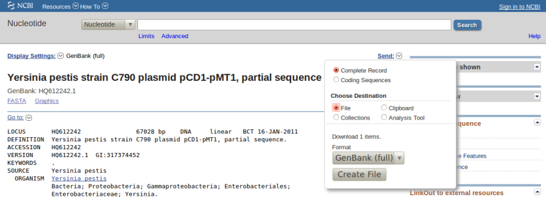
|
Often users take custom-made GenBank files, resulting from in-house genome assemblies, to be analysed.
In most cases genes from such files don't have GenBank identifiers assigned yet, and so we recommend
adding the field locus_tag to each CDS feature so that parsed sequences can be properly identified.
For their use with get_homologues,
GenBank files for the same species (for example, from the main chromosome and from a couple of plasmids)
must be concatenated. For instance, the genomic sequences of Rhizobium etli CFN 42 comprise
<845>>http://www.ncbi.nlm.nih.gov/genome?Db=genome&term=rhizobiumwhich can be concatenated into a single _Rhizobium_etli_CFN42.gbk file.
In order to assist in this task this software package includes the accompanying script
download_genomes_ncbi.pl. We will explain its use by fetching some of the Yersinia pestis
genomic sequences used in a 2010 paper
by Morelli et al:
Group Name Accession Number Status
0.PE2 Pestoides F NC_009381 Completed Sanger genome
0.PE3 Angola NC_010159 Completed Sanger genome
0.PE4 91001 NC_005810 Completed Sanger genome
0.ANT2 B42003004 NZ_AAYU00000000 Draft Sanger genome
1.ANT1 UG05-0454 NZ_AAYR00000000 Draft Sanger genome (12.3X coverage)
1.ANT1 Antiqua NC_008150 Completed Sanger genome
1.IN3 E1979001 NZ_AAYV00000000 Draft Sanger genome
1.ORI1 CA88-4125 NZ_ABCD00000000 Draft Sanger genome
1.ORI1 FV-1 NZ_AAUB00000000 Draft Sanger genome
1.ORI1 CO92 NC_003143 Completed Sanger genome
1.ORI2 F1991016 NZ_ABAT00000000 Draft Sanger genome
1.ORI3 IP674 ERA000177 Draft 454 genome (82X coverage)
1.ORI3 IP275 NZ_AAOS00000000 Draft Sanger genome (7.6X coverage)
1.ORI3 MG05-1020 NZ_AAYS00000000 Draft Sanger genome (12.1X coverage)
2.ANT1 Nepal516 NZ_ACNQ00000000 Draft Sanger genome
2.MED1 KIM NC_004088 Completed Sanger genome
2.MED2 K1973002 NZ_AAYT00000000 Draft Sanger genome
In order to use download_genomes_ncbi.pl is is necessary to feed it a text file listing which
genomes are to be downloaded. The next examples show the exact format required,
as does the bundled file sample_genome_list.txt.
First, it can be seen that completed genomes have NC accession numbers, and
can be added to the list as follows:
NC_010159 Yersinia_pestis_Angola
Other annotated genomes can be added using their assembly code, as in this example:
can be added to the list as follows:
GCA_000016445.1_ASM1644v1 Yersinia_pestis_Pestoides_F
Finally, draft WGS genomes, which can be browsed at
http://www.ncbi.nlm.nih.gov/Traces/wgs,
can be listed in our download file by adding their four-letter code of their prefixes, as follows:
AAYU01 Yersinia_pestis_B42003004
Finally, the genome_list.txt file will look as this:
NC_010159 Yersinia_pestis_Angola
GCA_000016445.1_ASM1644v1 Yersinia_pestis_Pestoides_F
AAYU01 Yersinia_pestis_B42003004
Note that only the first two columns (separated by blanks) are read in, and that lines can be commented out
by adding a '#' as the first character.
Now we can run the following terminal command to fetch these genomes:
$ ./download_genomes_ncbi.pl genome_list.txt
which will put several _Yersinia_pestis_*.gbk files in the current directory, which are now
ready to be used by get_homologues.
Due to the complexity of eukaryotic genomes, which are split in many chromosomes and contigs and usually contain complex gene models,
the preferred format taken by get_homologues for their sequences is FASTA.
While eukaryotic GenBank files can be fed in, during development we have not tested nor benchmarked the
compilation of clusters of nucleotide eukaryotic sequences, which can be more error prone due to the inclusion of, for instance,
introns and pseudogenes. Therefore we currently cannot recommend the use of eukaryotic GenBank input files.
Of course FASTA format can also be used for prokaryotic amino acid sequences, as in the case of the
example sample_buch_fasta folder, which contains protein sequences found in four Buchnera aphidicola genomes.
If your data are DNA coding sequences you can translate them to protein sequences for use with get_homologues,
for instance by means of a Perl command in the terminal, with a little help from Bioperl 2.1.
It is a long command, which is split in three chunks to fit in this page:
$ perl -MBio::Seq -lne 'if(/^(>.*)/){$h=$1}else{$fa{$h}.=$_} \
END{ foreach $h (sort(keys(%fa))){ $fa{$h}=Bio::Seq->new(-seq=>$fa{$h})->translate()->seq(); \
print "$h\n$fa{$h}\n" }}' your_CDS_file.fna
3.4 Program options
-v print version, credits and checks installation
-d directory with input FASTA files ( .faa / .fna ), (overrides -i,
GenBank files ( .gbk ), 1 per genome, or a subdirectory use of pre-clustered sequences
( subdir.clusters / subdir_ ) with pre-clustered sequences ignores -c, -g)
( .faa / .fna ); allows for new files to be added later;
creates output folder named 'directory_homologues'
-i input amino acid FASTA file with [taxon names] in headers, (required unless -d is set)
creates output folder named 'file_homologues'
Optional parameters:
-o only run BLAST/Pfam searches and exit (useful to pre-compute searches)
-c report genome composition analysis (follows order in -I file if enforced,
ignores -r,-t,-e)
-R set random seed for genome composition analysis (optional, requires -c, example -R 1234,
required for mixing -c with -c -a runs)
-s save memory by using BerkeleyDB; default parsing stores
sequence hits in RAM
-m runmode [local|cluster] (default local)
-n nb of threads for BLAST/HMMER/MCL in 'local' runmode (default=2)
-I file with .faa/.gbk files in -d to be included (takes all by default, requires -d)
Algorithms instead of default bidirectional best-hits (BDBH):
-G use COGtriangle algorithm (COGS, PubMed=20439257) (requires 3+ genomes|taxa)
-M use orthoMCL algorithm (OMCL, PubMed=12952885)
Options that control sequence similarity searches:
-C min %coverage in BLAST pairwise alignments (range [1-100],default=75)
-E max E-value (default=1e-05,max=0.01)
-D require equal Pfam domain composition (recommended with -m cluster
when defining similarity-based orthology
-S min %sequence identity in BLAST query/subj pairs (range [1-100],default=1 [BDBH|OMCL])
-N min BLAST neighborhood correlation PubMed=18475320 (range [0,1],default=0 [BDBH|OMCL])
-b compile core-genome with minimum BLAST searches (ignores -c [BDBH])
Options that control clustering:
-t report sequence clusters including at least t taxa (default t=numberOfTaxa,
t=0 reports all clusters [OMCL|COGS])
-a report clusters of sequence features in GenBank files (requires -d and .gbk files,
instead of default 'CDS' GenBank features example -a 'tRNA,rRNA',
NOTE: uses blastn instead of blastp,
ignores -g,-D)
-g report clusters of intergenic sequences flanked by ORFs (requires -d and .gbk files)
in addition to default 'CDS' clusters
-f filter by %length difference within clusters (range [1-100], by default sequence
length is not checked)
-r reference proteome .faa/.gbk file (by default takes file with
least sequences; with BDBH sets
first taxa to start adding genes)
-e exclude clusters with inparalogues (by default inparalogues are
included)
-x allow sequences in multiple COG clusters (by default sequences are allocated
to single clusters [COGS])
-F orthoMCL inflation value (range [1-5], default=1.5 [OMCL])
-A calculate average identity of clustered sequences, (optional, creates tab-separated matrix,
by default uses blastp results but can use blastn with -a recommended with -t 0 [OMCL|COGS])
-z add soft-core to genome composition analysis (optional, requires -c [OMCL|COGS])
Figure 2:
Flowchart of get_homologues.
|
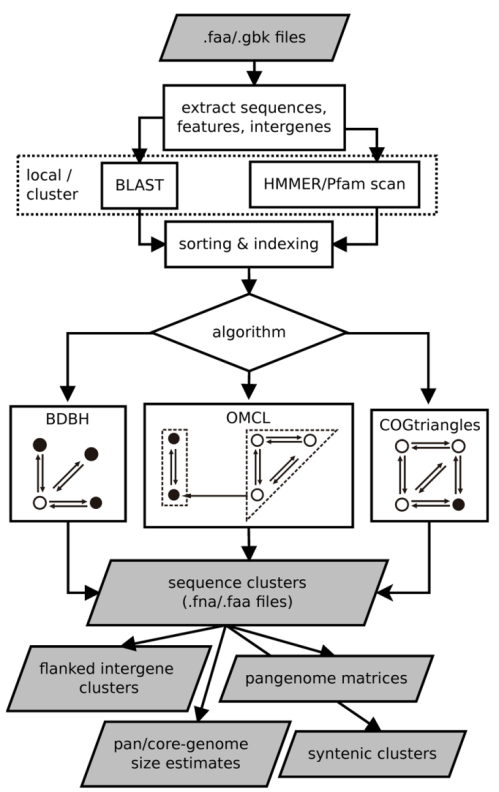
|
Typing $ ./get_homologues.pl -h on the terminal will show the available options, shown on the previous pages.
The only required option is either -i, used to choose an input file, or -d instead, which indicates
an input folder, as seen in section 3.1. It is important to remark that in principle only files
with extensions .faa and .gbk are considered when parsing the -d directory.
By using .faa input files in theory you might only calculate clusters of protein sequences.
In contrast, the advantage of using .gbk files is that you obtain both nucleotide and protein clusters.
If both types of input files are combined, only protein clusters will be produced.
However, if each input .faa file has a twin .fna file in place, containing the corresponding
nucleotide sequences in the same order, the program will attempt to produce the corresponding clusters of nucleotide sequences.
The possible input file combinations are summarized in Table 1:
Table 1:
Valid input file combinations.
| input file extensions |
output clusters |
.gbk |
amino acid + DNA sequence |
.faa |
amino acid sequence |
.gbk & .faa |
amino acid sequence |
.faa & .fna |
amino acid + DNA sequence |
.gbk & .faa & .fna |
amino acid + DNA sequence |
|
The use of an input folder or directory (-d)
is recommended as it allows for new files to be added there in the future, reducing the computing required
for updated analyses. For instance, if a user does a first analysis with 5 input genomes today, it is possible
to check how the resulting clusters would change when adding an extra 10 genomes tomorrow, by copying these new 10
.faa / .gbk input files to the pre-existing -d folder, so that all previous BLAST searches are re-used.
In addition to .gbk and .faa files, the input directory can also contain one subfolder with pre-clustered sequences.
This feature was designed so that users can add previously produced get_homologues clusters,
or any other set of grouped sequences in FASTA format, to be analysed. For such a subfolder to be recognized, it must
be named subdir.clusters or subdir_. Sample data folder sample_buch_fasta/ contains such an example subfolder
which can be uncompressed to be tested. It is important to note that, during subsequent calculations,
these clusters are represented by the first sequence found in each. However, the output of the program will include
all pre-clustered sequences for convenience.
All remaining flags are options that can modify the default behavior of the program, which is to use the
bidirectional best hit algorithm (BDBH) in order to compile clusters of potential orthologous ORFs,
taking the smallest genome as a reference. By default protein sequences are used to guide the clustering, thus
relying on BLASTP searches.
Perhaps the most important optional parameter would be the choice of clustering algorithm (Table 2):
Table 2:
List of available clustering algorithms.
| name |
option |
|
| BDBH |
default |
Starting from a reference genome, keep adding genomes stepwise while storing the sequence clusters
that result of merging the latest bidirectional best hits, as illustrated in Figure 3. |
| COGS |
-G |
Merges triangles of inter-genomic symmetrical best matches, as described in
PubMed=20439257.
Note that a single sequence might occasionally be included in several COGS clusters with option -x. |
| OMCL |
-M |
OrthoMCL v1.4, uses the Markov Cluster Algorithm to group sequences,
with inflation (-F) controlling cluster granularity, as described in
PubMed=12952885. |
|
Figure 3:
Flowchart of BDBH algorithm with default parameters and G genomes.
First, inparalogues, defined as intra-specific bidirectional best hits (BDBHs), are identified in each genome;
second, new genomes are incrementally compared to the reference genome and their BDBHs annotated;
finally, clusters containing at least 1 sequence per genome are conserved.
|
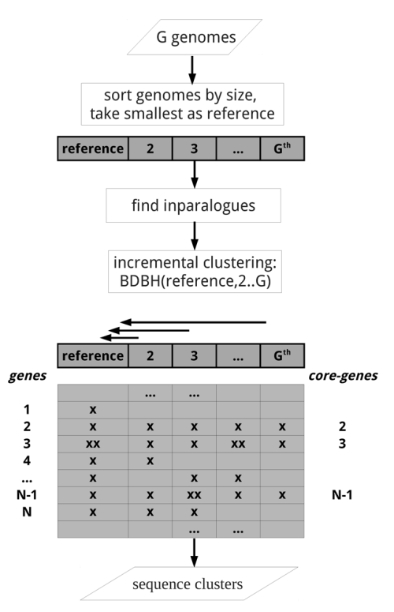
|
The remaining options are now reviewed:
- Apart from showing the credits, option
-v can be helpful after installation,
for it prints the enabled features of the program, which of course depend on the required and optional
binaries mentioned in sections 2.2 and 2.3.
-o is ideally used to submit to a computer cluster the required BLAST (and Pfam) searches, preparing a job for posterior
analysis on a single computer.
-c is used to request a pan- and core-genome analysis of the input genomes, which will be output as a tab-separated data file.
The number of samples for the genome composition analysis is set to 10 by default, but this can be edited at the header of
get_homologues.pl (check the $NOFSAMPLESREPORT variable). In addition, variables $MIN_PERSEQID_HOM and
$MIN_COVERAGE_HOM, with default values 0 and 20, respectively, control how homologues are called.
These can also be edited at lib/marfil_homology.pm to relax (or make more stringent) calling a sequence homologous, and therefore, redundant.
For instance, the equivalent values used by Tettelin and collaborators (PubMed=16172379),
are 50 and 50, respectively.
-R takes a number that will be used to seed the random generator used with option -c. By using the
same seed in different -c runs the user ensures that genomes are sampled in the same order.
-s can be used to reduce the memory footprint, provided that the Perl module
BerkeleyDB
is in place (please check section 2.3).
This option usually makes get_homologues slower, but for very large datasets or in machines with little memory resources
this might be the only way to complete a job.
-m allows the choice of runmode, which can be either -m local (the default) or
-m cluster. In the second case global variable $SGEPATH might need to be appropriately set, as explained in section 2.3,
as well as $QUEUESETTINGS, that specificies for instance a particular queue name for your cluster jobs.
-n sets the number of threads/CPUs to dedicate to each BLAST/HMMER job run locally, which by default is 2.
-I list_file.txt allows the user to restrict a get_homologues job to a subset of the genomes included in the input -d folder.
This flag can be used in conjunction with -c to control the order in which genomes are considered during pan- and core-genome analyses.
Taking the sample_buch_fasta folder, a valid list_file.txt could contain these lines:
Buch_aph_APS.faa
Buch_aph_Bp.faa
Buch_aph_Cc.faa
- option
-C sets the minimum percentage of coverage required to call two sequences best hits,
as illustrated in the figure. The larger these values get, the smaller the chance that two sequences are
found to be reciprocal best hits. The default coverage value is set to 75%.
This parameter has a large impact on the results obtained and its optimal values will depend on the input
data and the anticipated use of the produced clusters:
Figure 4:
Coverage [BDBH,OMCL] and overall segment coverage [COGS] illustrated with the
alignment of sequence 'query' to two aligned fragments of sequence 'subject', where 1,s1,e1,s2,e2 and L
are alignment coordinates.
|
|
-E sets the maximum expectation value (E-value) for BLAST alignments. This value is by default set to 1e-05.
This parameter might be adjusted for nucleotide BLAST searches or for very short proteins, under 40 residues.
-S can be passed to require a minimum % sequence identity for two sequences to be called best hits.
This option does not affect COGS runs; its default value is set to 1.
-N sets a minimum neighborhood correlation, as defined in
PubMed=18475320,
for two sequences to be called best hits. In this context 'neighborhood' is the set of homologous sequences reported by BLAST,
with the idea that two reliable best hits should have similar sets of homologous sequences.
-D is an extra restriction for calling best hits, that should have identical Pfam domain compositions. Note that this
option requires scanning all input sequences for Pfam domains, and this task requires some software to be installed (see section 2.3)
and extra computing time, ideally on a computer cluster (-m cluster).
While for BDBH domain filtering is done at the time bidirectional best hits are called, this processing step is performed only after the
standard OMCL and COGS algorithms have completed, to preserve each algorithm features.
-b reduces the number of pairwise BLAST searches performed while compiling core-genomes with algorithm BDBH,
reducing considerably memory and run-time requirements (for  genomes, 3G searches are launched instead of the default ).
It comes at the cost of being less exhaustive in finding inparalogues, but in our bacterial benchmarks this potential, undesired
effect was negligible.
genomes, 3G searches are launched instead of the default ).
It comes at the cost of being less exhaustive in finding inparalogues, but in our bacterial benchmarks this potential, undesired
effect was negligible.
Figure 5:
For genomes, a typical get_homologues job requires running BLAST searches in order to compare all against all sequences,
including against itself to help infer inparalogues. Therefore, the resources required for calculating BLAST jobs grow quadratically.
Instead, the BDBH algorithm with option -b requires only 3G BLAST searches (in grey) for any reference genome.
|
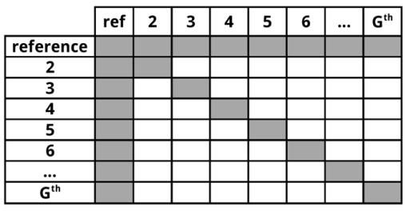
|
-t is used to control which sequence clusters should be reported. By default only clusters which include at least one sequence
per genome are output. However, a value of -t 2 would report all clusters containing sequences from at least 2 taxa. A especial
case is -t 0, which will report all clusters found, even those with sequences from a single genome.
-a forces the program to extract user-selected sequence features typically contained in GenBank files, such as
tRNA or rRNA genes, instead of default CDSs. When using this option clusters are compiled by comparing nucleotide sequences
with BLASTN. Note that such BLASTN searches are expected to be less sensitive than default BLASTP searches.
-g can be used to request the compilation of clusters of intergenic sequences. This implies the calculation of ORF clusters and then
a search for pairs of 'orthologous' ORFs which flanking conserved intergenic regions, with the constraints set by three global variables in the
header of get_homologues.pl:
my $MININTERGENESIZE = 200; # minimum length (nts) required for intergenic
# segments to be considered
my $MAXINTERGENESIZE = 700;
my $INTERGENEFLANKORF = 180; # length in nts of intergene flanks borrowed
# from neighbor ORFs
Figure 6:
Two divergent ORFs flanking an intergenic region. Only 180 bases from each ORF are taken for compiling intergenic
clusters.
|
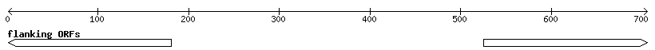
|
-f filters out cluster sequences with large differences in length. This flag
compares sequences within a cluster to the first (arbitrary) reference sequence. Those with length difference
(either shorter or longer) beyond the selected threshold will be removed. This might cause
the resulting cluster to be entirely removed if the final number of taxa falls below the -t minimum.
-r allows the choice of any input genome (of course included in -d folder)
as the reference, instead of the default smaller one. If possible, resulting clusters are named using gene names from
this genome, which can be used to select well annotated species for this purpose. In addition, when using the default
BDBH algorithm, the reference proteome is the one chosen to start adding genes in the clustering process. Therefore,
when using BDBH, the choice of reference proteome can have a large impact on the resulting number of clusters. By default,
the taxon with least genes is taken as reference. It is possible to change the way clusters are named by editing subroutine
extract_gene_name in file lib/phyTools.pm.
-e excludes clusters with inparalogues, defined as sequences with best hits in its own genome.
This option might be helpful to rule out clusters including several sequences from the same species, which might be of
interest for users employing these clusters for primer design, for instance.
-x allows COG-generated sequence clusters to contain the same sequence in more than one cluster.
-F is the inflation value that governs Markov Clustering in OMCL runs, as explained in
PubMed=12952885. As a rule of thumb,
low inflation values (-F 1)result in the inclusion of more sequences in fewer groups, whilst large values
produce more, smaller clusters (-F 4).
-A tells the program to produce a tab-separated file with average % sequence identity values among pairs of genomes,
computed from sequences in the final set of clusters (see also option -t ).
By default these identities are derived from BLASTP alignments, and hence correspond to amino acid sequence identities.
However, as explained earlier, option -a forces the program to use nucleotide sequences and run BLASTN
instead, and therefore, -a 'CDS' combined -A will produce genomic average nucleotide sequence identities (ANI), as used
in the literature to help define prokaryotic species
(PubMed=19855009).
-z can be called when performing a genome composition analysis with clustering algorithms OMCL or COGS.
In addition to the core- and pan-genome tab-separated files mentioned earlier (see option -c), this flag requests
a soft-core report, considering all sequence clusters present in a fraction of genomes defined by global variable $SOFTCOREFRACTION,
with a default value of 0.95. This choice produces a composition report more robust to assembly or annotation errors than the core-genome.
The following Perl scripts are included in the bundle to assist in the interpretation of results generated
by get_homologues.pl:
- download_genomes_ncbi.pl, a script which is described in section 3.2
with examples.
- compare_clusters.pl primarily calculates the intersection between cluster sets,
which can be used to select clusters supported by different algorithms or settings.
This script can also produce syntenic clusters, pangenome matrices,
OrthoXML reports,
and Venn diagrams
(this last optional feature requires R, please check section 2.3).
Examples of use of this script are presented in sections 4.1, 4.5 and 4.8.1.
- parse_pangenome_matrix.pl is a script that can be used to analyze pan-genome sets, in order to
find genes present in a group A of species which are absent in set B. The identified genes can be
mapped onto the underlying genome contigs of a reference genome included in A. Moreover this script can be used
for calculating and plotting cloud, shell and core genome compartments. Please see examples in sections
4.8.2 and 4.8.3.
- make_nr_pangenome_matrix.pl is provided to post-process pangenome matrices in case the user wishes
to remove redundant clusters.
- plot_pancore_matrix.pl, a Perl script to plot pan/core-genome sampling results and to fit regression
curves with help from R
functions. An example of use of this script is given in section 4.8.4.
Please check section 2.3 for the requirements of this script.
- check_BDBHs.pl is a script that can be used, after a previous get_homologues run, to find out the
bidirectional best hits of a sequence identifier chosen by the user. It can also retrieve the Pfam annotations of a sequence and its
reciprocal best hits. See section 4.8.7.
- add_pancore_matrices.pl can be used to add pan/core-matrices produced by previous
get_homologues -c -R runs on the same set of genomes, with the aim of combining default CDS clusters
and -a 'rRNA,tRNA' results.
- add_pangenome_matrices.pl can be used similarly to add two pangenome matrices produced by
compare_clusters.pl, for instance from sets of CDS and rRNA,tRNA clusters.
- pfam_enrich.pl calculates the enrichment of a set of sequence clusters in terms of Pfam domains,
by using Fisher's exact test.
- annotate_cluster.pl can be used to retrieve a multiple alignment view of the supporting local BLAST alignments
of the sequences in the cluster, and to annotate any encoded Pfam domain.
In addition, two shell scripts are also included:
- plot_matrix_heatmap.sh calculates ordered heatmaps with attached row and column dendrograms from squared
tab-separated numeric matrices, which can be presence/absence pangenomic matrices or similarity / identity matrices as those
produced by get_homologues with flag
-A. From the later type of matrix a distance matrix can optionally be calculated
to drive a neighbor joining tree. See example on section 4.8.1.
- hcluster_matrix.sh generates a distance matrix out of a tab-separated numeric matrix, which is then used to call
R functions
hclust() and heatmap.2() in order to produce a heatmap.
To check the options of any of these scripts please invoke them from the terminal with flag -h.
For instance, typing $ ./compare_clusters.pl -h in the terminal will produce the following:
-h this message
-d comma-separated names of cluster directories, which
usually have associated dir.cluster_list files. These lists
avoid parsing taxon names from FASTA headers, which might be
error prone.
-o output directory
-n use nucleotide sequence .fna clusters
-r take first cluster dir as reference set, which might contain
a single representative sequence per cluster
-s use only clusters with syntenic genes
-t use only clusters with single-copy orthologues from -t taxa
-I produce clusters with single-copy seqs from ALL taxa in file
-m produce intersection pangenome matrices
-x produce cluster report in OrthoXML format
-T produce parsimony-based pangenomic tree
4 A few examples of use
This section presents a few different ways of running get_homologues.pl
and the accompanying scripts with provided sample input data.
4.1 Clustering orthologous proteins from a few FASTA files
This example takes the provided sample input folder sample_buch_fasta,
which contains the proteins sets of four
<846>>http://en.wikipedia.org/wiki/Buchnera_and compiles clusters of BDBH sequences, which are candidates to be orthologues, with this command:
$ ./get_homologues.pl -d sample_buch_fasta .
The output should look like this (contained in file sample_output.txt):
# ./get_homologues.pl -i 0 -d sample_buch_fasta -o 0 -e 0 -f 0 -r 0 -t all -c 0 -I 0
# -m local -n 2 -M 0 -G 0 -P 0 -C 75 -S 1 -E 1e-05 -F 1.5 -N 0 -B 50 -s 0 -D 0 -g 0 -a '0' -x -R 0
# results_directory=sample_buch_fasta_homologues
# parameters: MAXEVALUEBLASTSEARCH=0.01 MAXPFAMSEQS=250
# checking input files...
# Buch_aph_APS.faa 574
# Buch_aph_Bp.faa 507
# Buch_aph_Cc.faa 357
# Buch_aphid_Sg.faa 546
# 4 genomes, 1984 sequences
# taxa considered = 4 sequences = 1984 residues = 650959 MIN_BITSCORE_SIM = 17.2
# mask=BuchaphCc_f0_alltaxa_algBDBH_e0_ (_algBDBH)
# running makeblastdb with sample_buch_fasta_homologues/Buch_aph_APS.faa.fasta
# running makeblastdb with sample_buch_fasta_homologues/Buch_aph_Bp.faa.fasta
# running makeblastdb with sample_buch_fasta_homologues/Buch_aph_Cc.faa.fasta
# running makeblastdb with sample_buch_fasta_homologues/Buch_aphid_Sg.faa.fasta
# running BLAST searches ...
# done
# concatenating and sorting blast results...
# sorting _Buch_aph_APS.faa results (0.12MB)
# sorting _Buch_aph_Bp.faa results (0.11MB)
# sorting _Buch_aph_Cc.faa results (0.084MB)
# sorting _Buch_aphid_Sg.faa results (0.11MB)
# done
# parsing blast result! (sample_buch_fasta_homologues/tmp/all.blast , 0.42MB)
# parsing blast file finished
# creating indexes, this might take some time (lines=9.30e+03) ...
# construct_taxa_indexes: number of taxa found = 4
# number of file addresses = 9.3e+03 number of BLAST queries = 2.0e+03
# clustering orthologous sequences
# clustering inparalogues in Buch_aph_Cc.faa (reference)
# 0 sequences
# clustering inparalogues in Buch_aph_APS.faa
# 1 sequences
# finding BDBHs between Buch_aph_Cc.faa and Buch_aph_APS.faa
# 324 sequences
# clustering inparalogues in Buch_aph_Bp.faa
# 0 sequences
# finding BDBHs between Buch_aph_Cc.faa and Buch_aph_Bp.faa
# 326 sequences
# clustering inparalogues in Buch_aphid_Sg.faa
# 0 sequences
# finding BDBHs between Buch_aph_Cc.faa and Buch_aphid_Sg.faa
# 317 sequences
# looking for valid ORF clusters (n_of_taxa=4)...
# number_of_clusters = 305
# cluster_list = sample_buch_fasta_homologues/BuchaphCc_f0_alltaxa_algBDBH_e0_.cluster_list
# cluster_directory = sample_buch_fasta_homologues/BuchaphCc_f0_alltaxa_algBDBH_e0_
# runtime: 64 wallclock secs ( 0.74 usr 0.08 sys + 61.49 cusr 0.47 csys = 62.78 CPU)
# RAM use: 20.3 MB
In summary, the output details the processing steps required:
- Reading and parsing input files
(
Buch_aph_APS.faa,Buch_aph_Bp.faa,Buch_aph_Cc.faa,Buch_aphid_Sg.faa),
which contain 574, 507, 357 and 546 protein sequences, respectively. In total there are
four input taxa and 1984 sequences.
- Preparing input sequences for BLAST.
- Running BLAST searches and sorting the results.
- Parsing the complete volume of sorted BLAST results.
- Searching for orthologous sequences using the BDBH algorithm, which requires a reference taxon or proteome
to start with (see Figure 3).
- Clustering orthologous sequences and put them in files inside an appropriate folder. In this example
the relevant output is directory
sample_buch_fasta_homologues/BuchaphCc_f0_alltaxa_algBDBH_e0_ together with
file sample_buch_fasta_homologues/BuchaphCc_f0_alltaxa_algBDBH_e0_.cluster_list, which lists the found
clusters and their taxa composition. It can be seen that the folder name contains the key settings used to
cluster the sequences contained therein:
BuchaphCc_f0_alltaxa_algBDBH_e0_
| | | | |
| | | | -e option was not used (inparalogues are in)
| | | the clustering algorithm is BDBD (default)
| | all clusters contain at least 1 sequence from each taxa (default -t behavior)
| -f option not used (no length filtering)
reference proteome
In this case a total of 305 protein sequence clusters are produced, which include the original FASTA headers plus
information of which segment was actually aligned by BLAST for inclusion in the cluster:
>gi|116515296| Rho [Buchnera aphidicola str. Cc (Cinara cedri)] | aligned:1-419 (420)
MNLTKLKNTSVSKLIILGEKIGLENLARMRKQDIIFSILKQHSKSGEDIFGDGVLEILQDGFGFLRSSDSSYLAGPDDIYVSPS...
>gi|15617182| termination factor Rho [Buchnera aphidicola str. APS] | aligned:1-419 (419)
MNLTALKNMPVSELITLGEKMGLENLARMRKQDIIFAILKQHAKSGEDIFGDGVLEILQDGFGFLRSADSSYLAGPDDIYVSPS...
>gi|27905006| termination factor Rho [Buchnera aphidicola str. Bp] | aligned:1-419 (419)
MNLTALKNIPVSELIFLGDNAGLENLARMRKQDIIFSILKQHAKSGEDIFGDGVLEILQDGFGFLRSSDSSYLAGPDDIYVSPS...
>gi|21672828| termination factor Rho [Buchnera aphidicola str. Sg] | aligned:1-419 (419)
MNLTALKNMPVSELITLGEKMGLENLARMRKQDIIFAILKQHAKSGEDIFGDGVLEILQDGFGFLRSADSSYLAGPDDIYVSPS...
If we wanted to test a different sequence clustering algorithm we could run
$ ./get_homologues.pl -d sample_buch_fasta -G ,
which will produce 298 clusters
employing the COG triangles algorithm (see Table 2) in folder
sample_buch_fasta_homologues/BuchaphCc_f0_alltaxa_algCOG_e0_.
Furthermore, typing $ ./get_homologues.pl -d sample_buch_fasta -M
produces 308 clusters employing the OMCL algorithm in folder
sample_buch_fasta_homologues/BuchaphCc_f0_alltaxa_algOMCL_e0_.
Now we can make use of script compare_clusters.pl
to get the intersection between these cluster sets and choose only the consensus subset.
We will need to type (without any blanks between folder names, in a single long line) and execute:
./compare_clusters.pl -o sample_intersection -d \
sample_buch_fasta_homologues/BuchaphCc_f0_alltaxa_algBDBH_e0_, \
sample_buch_fasta_homologues/BuchaphCc_f0_alltaxa_algCOG_e0_, \
sample_buch_fasta_homologues/BuchaphCc_f0_alltaxa_algOMCL_e0_
The following output is produced:
# number of input cluster directories = 3
# parsing clusters in sample_buch_fasta_homologues/BuchaphCc_f0_alltaxa_algBDBH_e0_ ...
# cluster_list in place, will parse it (BuchaphCc_f0_alltaxa_algBDBH_e0_.cluster_list)
# number of clusters = 305
# parsing clusters in sample_buch_fasta_homologues/BuchaphCc_f0_alltaxa_algCOG_e0_ ...
# cluster_list in place, will parse it (BuchaphCc_f0_alltaxa_algCOG_e0_.cluster_list)
# number of clusters = 298
# parsing clusters in sample_buch_fasta_homologues/BuchaphCc_f0_alltaxa_algOMCL_e0_ ...
# cluster_list in place, will parse it (BuchaphCc_f0_alltaxa_algOMCL_e0_.cluster_list)
# number of clusters = 308
# intersection output directory: sample_intersection
# intersection size = 295 clusters
# intersection list = sample_intersection/intersection_t0.cluster_list
# input set: sample_intersection/BuchaphCc_f0_alltaxa_algBDBH_e0_.venn_t0.txt
# input set: sample_intersection/BuchaphCc_f0_alltaxa_algCOG_e0_.venn_t0.txt
# input set: sample_intersection/BuchaphCc_f0_alltaxa_algOMCL_e0_.venn_t0.txt
# Venn diagram = sample_intersection/venn_t0.pdf
# Venn region file: sample_intersection/unique_BuchaphCc_f0_alltaxa_algBDBH_e0_.venn_t0.txt (5)
# Venn region file: sample_intersection/unique_BuchaphCc_f0_alltaxa_algCOG_e0_.venn_t0.txt (0)
# Venn region file: sample_intersection/unique_BuchaphCc_f0_alltaxa_algOMCL_e0_.venn_t0.txt (5)
The 295 resulting clusters, those present in all input cluster sets, are placed in a new folder
which was designated by parameter -o sample_intersection. Note that these are clusters that belong to
the core-genome, as they contain sequence from all input taxa. A Venn diagram,
such as the one in Figure 7, might also be produced which summarizes the analysis.
Figure 7:
Venn diagram showing the overlap between clusters of 'orthologous' sequences produced
by three different algorithms and otherwise identical settings.
|
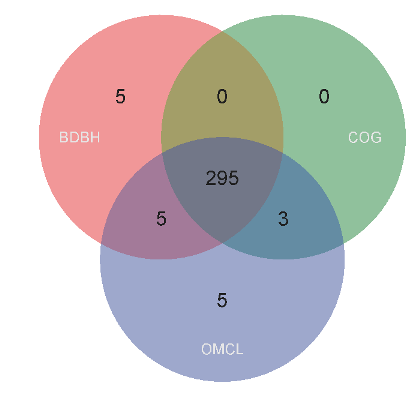
|
If we are interested only in clusters containing single-copy proteins from all input species,
as they are probably safer orthologues, we can add the option -t 4 to our previous command,
as our example dataset contains 4 input proteomes.
4.2 Clustering orthologous proteins from a single FASTA file
A similar analysis could be performed with a single input FASTA file containing amino acid sequences, provided
that each contains a [taxon name] in its header, as explained in section 3.1:
>gi|10957100|ref|NP_057962.1| ... [Buchnera aphidicola str. APS (Acyrthosiphon pisum)]
MFLIEKRRKLIQKKANYHSDPTTVFNHLCGSRPATLLLETAEVNKKNNLESIMIVDSAIRVSAVKNSVKI
TALSENGAEILSILKENPHKKIKFFEKNKSINLIFPSLDNNLDEDKKIFSLSVFDSFRFIMKSVNNTKRT
SKAMFFGGLFSYDLISNFESLPNVKKKQKCPDFCFYLAETLLVVDHQKKTCLIQSSLFGRNVDEKNRIKK
RTEEIEKKLEEKLTSIPKNKTTVPVQLTSNISDFQYSSTIKKLQKLIQKGEIFQVVPSRKFFLPCDNSLS
AYQELKKSNPSPYMFFMQDEDFILFGASPESSLKYDEKNRQIELYPIAGTRPRGRKKDGTLDLDLDSRIE
LEMRTNHKELAEHLMLVDLARNDLARICEPGSRYVSDLVKVDKYSHVMHLVSKVVGQLKYGLDALHAYSS
CMNMGTLTGAPKVRAMQLIAEYEGEGRGSYGGAIGYFTDLGNLDTCITIRSAYVESGVATIQAGAGVVFN
SIPEDEVKESLNKAQAVINAIKKAHFTMGSS
[...]
>gi|15616637|ref|NP_239849.1| ... [Buchnera aphidicola str. APS (Acyrthosiphon pisum)]
MTSTKEIKNKIVSVTNTKKITKAMEMVAVSKMRKTEERMRSGRPYSDIIRKVIDHVTQGNLEYKHSYLEE
RKTNRIGMIIISTDRGLCGGLNTNLFKQVLFKIQNFAKVNIPCDLILFGLKSLSVFKLCGSNILAKATNL
GENPKLEELINSVGIILQEYQCKRIDKIFIAYNKFHNKMSQYPTITQLLPFSKKNDQDASNNNWDYLYEP
ESKLILDTLFNRYIESQVYQSILENIASEHAARMIAMKTATDNSGNRIKELQLVYNKVRQANITQELNEI
VSGASAVSID
[...]
>gi|21672839|ref|NP_660906.1| ... [Buchnera aphidicola str. Sg (Schizaphis graminum)]
MHLNKMKKVSLKTYLVLFFLIFFIFCSFWFIKPKEKKLKLEKLRYEEVIKKINAKNNQNLKSVENFITEN
KNIYGTLSSLFLAKKYILDKNLDKALIQLNNSLKYTKEENLQNILKIRIAKIKIQQNKNQDAIKILEEIK
DNSWKNIVENMKGDIFMKNKEIKKAILAWKKSKYLEKSNASKEIINMKINEIKR
It is possible to analyze the provided sample input file sample_buchnera.faa with the following command:
$ ./get_homologues.pl -i sample_buchnera.faa .
Obtaining:
# results_directory=sample_buchnera_homologues
# parameters: MAXEVALUEBLASTSEARCH=0.01 MAXPFAMSEQS=250
# checking input files...
# sample_buchnera.faa
# created file sample_buchnera_homologues/tmp/all.fa (4 genomes, 1984 sequences)
# taxa considered = 4 sequences = 1984 residues = 650959 MIN_BITSCORE_SIM = 17.2
# mask=BuchneraaphidicolastrCcCinaracedri3_f0_alltaxa_algBDBH_e0_ (_algBDBH)
# running makeblastdb with sample_buchnera_homologues/tmp/all.fa
# running local BLAST search
# done
# parsing blast result! (sample_buchnera_homologues/tmp/all.blast , 0.44MB)
# parsing blast file finished
# creating indexes, this might take some time (lines=9.30e+03) ...
# construct_taxa_indexes: number of taxa found = 4
# number of file addresses = 9.3e+03 number of BLAST queries = 2.0e+03
# clustering orthologous sequences
# clustering inparalogues in Buchnera_aphidicola_str__Cc__Cinara_cedri__3.faa (reference)
# 0 sequences
[...]
# looking for valid ORF clusters (n_of_taxa=4)...
# number_of_clusters = 305
# cluster_list = [...]/BuchneraaphidicolastrCcCinaracedri3_f0_alltaxa_algBDBH_e0_.cluster_list
# cluster_directory = [...]/BuchneraaphidicolastrCcCinaracedri3_f0_alltaxa_algBDBH_e0_
# runtime: 55 wallclock secs ( 0.76 usr 0.04 sys + 51.75 cusr 0.23 csys = 52.78 CPU)
# RAM use: 21.3 MB
4.3 Clustering genes and proteins extracted from GenBank files
The use of input files in GenBank format allows clustering nucleotide sequences in addition
to proteins, since this format supports the annotation of raw genomic sequences.
This example illustrates this feature by taking the input folder
sample_plasmids_gbk, which contains 12 GenBank files of plasmid replicons,
which we analyze by running $ ./get_homologues.pl -d sample_plasmids_gbk :
# results_directory=sample_plasmids_gbk_homologues
# parameters: MAXEVALUEBLASTSEARCH=0.01 MAXPFAMSEQS=250
# checking input files...
# E_coli_ST131_plasmid_pKC394.gb 55
# E_coli_plasmid_pMUR050.gb 60
# IncN_plasmid_R46.gb 63
# K_oxytoca_plasmid_pKOX105.gb 69
# K_pneumoniae_12_plasmid_12.gb 92
# K_pneumoniae_9_plasmid_9.gb 87
# K_pneumoniae_KP96_plasmid_pKP96.gb 64
# S_enterica_subsp_enterica_serovar_Dublin_plasmid_pMAK2.gb 52
# Uncultured_bacterium_plasmid_pRSB201.gb 58
# Uncultured_bacterium_plasmid_pRSB203.gb 49
# Uncultured_bacterium_plasmid_pRSB205.gb 52
# Uncultured_bacterium_plasmid_pRSB206.gb 55
# 12 genomes, 756 sequences
# taxa considered = 12 sequences = 756 residues = 184339 MIN_BITSCORE_SIM = 16.0
# mask=EcoliplasmidpMUR050_f0_alltaxa_algBDBH_e0_ (_algBDBH)
[..]
# running BLAST searches ...
# done
# concatenating and sorting blast results...
# sorting _E_coli_ST131_plasmid_pKC394.gb results (0.026MB)
# sorting _E_coli_plasmid_pMUR050.gb results (0.026MB)
# sorting _IncN_plasmid_R46.gb results (0.026MB)
# sorting _K_oxytoca_plasmid_pKOX105.gb results (0.031MB)
# sorting _K_pneumoniae_12_plasmid_12.gb results (0.036MB)
# sorting _K_pneumoniae_9_plasmid_9.gb results (0.027MB)
# sorting _K_pneumoniae_KP96_plasmid_pKP96.gb results (0.026MB)
# sorting _S_enterica_subsp_enterica_serovar_Dublin_plasmid_pMAK2.gb results (0.025MB)
# sorting _Uncultured_bacterium_plasmid_pRSB201.gb results (0.029MB)
# sorting _Uncultured_bacterium_plasmid_pRSB203.gb results (0.023MB)
# sorting _Uncultured_bacterium_plasmid_pRSB205.gb results (0.026MB)
# sorting _Uncultured_bacterium_plasmid_pRSB206.gb results (0.026MB)
# done
# parsing blast result! (sample_plasmids_gbk_homologues/tmp/all.blast , 0.33MB)
# parsing blast file finished
# creating indexes, this might take some time (lines=7.61e+03) ...
# construct_taxa_indexes: number of taxa found = 12
# number of file addresses = 7.6e+03 number of BLAST queries = 7.6e+02
# clustering orthologous sequences
# clustering inparalogues in E_coli_plasmid_pMUR050.gb (reference)
# 2 sequences
[...]
# looking for valid ORF clusters (n_of_taxa=12)...
# number_of_clusters = 24
# cluster_list = [...]_homologues/EcoliplasmidpMUR050_f0_alltaxa_algBDBH_e0_.cluster_list
# cluster_directory = sample_plasmids_gbk_homologues/EcoliplasmidpMUR050_f0_alltaxa_algBDBH_e0_
# runtime: 28 wallclock secs ( 1.62 usr 0.33 sys + 24.31 cusr 1.57 csys = 27.83 CPU)
# RAM use: 19.5 MB
This outcome is similar to that explained in example 4.1, with the notable difference
that now both protein and nucleotide sequence clusters (24) are produced, as GenBank files usually contain both types
of sequences. File EcoliplasmidpMUR050_f0_alltaxa_algBDBH_e0_.cluster_list.cluster_list
summarizes the contents and composition of the clusters stored in folder
EcoliplasmidpMUR050_f0_alltaxa_algBDBH_e0_.
For instance, the data concerning cluster 100_traJ looks like this:
cluster 100_traJ size=12 taxa=12 file: 100_traJ.faa dnafile: 100_traJ.fna
: E_coli_plasmid_pMUR050.gb
: E_coli_ST131_plasmid_pKC394.gb
: IncN_plasmid_R46.gb
: K_oxytoca_plasmid_pKOX105.gb
: K_pneumoniae_12_plasmid_12.gb
: K_pneumoniae_9_plasmid_9.gb
: K_pneumoniae_KP96_plasmid_pKP96.gb
: S_enterica_subsp_enterica_serovar_Dublin_plasmid_pMAK2.gb
: Uncultured_bacterium_plasmid_pRSB201.gb
: Uncultured_bacterium_plasmid_pRSB203.gb
: Uncultured_bacterium_plasmid_pRSB205.gb
: Uncultured_bacterium_plasmid_pRSB206.gb
The two FASTA files produced for this cluster are now dissected.
Note that each header includes the coordinates of the sequence in the context of a genomic contig.
For instance, the first sequence was extracted from the leading strand of GenBank contig AY522431,
positions 44726-46255, out of a total 56634 nucleotides. Furthermore, the names of neighboring genes
are annotated when available, in order to capture some synteny information. These syntenic data
can be valuable when evaluating possible orthologous genes, as conservation of genomic position (also
operon context) strongly suggests orthology among prokaryots:
>GI:109390522 |[Escherichia coli]||traJ|1530|AY522431(56634):44726-46255:-1 [...]|neighbour_genes:traI,traK|
ATGGACGATAGAGAAAGAGGCTTAGCATTTTTATTTGCAATTACTTTGCCTCCAGTGATGGTATGGTTTCTAGTT...
[...]
and
>GI:109390522 |[Escherichia coli]||traJ|1530|AY522431(56634):44726-46255:-1 [...] | aligned:1-509 (509)
MDDRERGLAFLFAITLPPVMVWFLV...
4.4 Clustering genes and proteins that share Pfam domain architecture
The BDBH algorithm in get_homologues.pl can be modified by requiring bidirectional best hits to
share the same domain architecture, annotated in terms of Pfam domains. For large volumes of sequences
this taks should be accomplished on a computer cluster, but of course can also be performed locally.
The command on the terminal could then be: $ ./get_homologues.pl -d sample_plasmids_gbk -D
The generated output should be:
# results_directory=sample_plasmids_gbk_homologues
# parameters: MAXEVALUEBLASTSEARCH=0.01 MAXPFAMSEQS=250
# checking input files...
# E_coli_ST131_plasmid_pKC394.gb 55
# E_coli_plasmid_pMUR050.gb 60
# IncN_plasmid_R46.gb 63
# K_oxytoca_plasmid_pKOX105.gb 69
# K_pneumoniae_12_plasmid_12.gb 92
# K_pneumoniae_9_plasmid_9.gb 87
# K_pneumoniae_KP96_plasmid_pKP96.gb 64
# S_enterica_subsp_enterica_serovar_Dublin_plasmid_pMAK2.gb 52
# Uncultured_bacterium_plasmid_pRSB201.gb 58
# Uncultured_bacterium_plasmid_pRSB203.gb 49
# Uncultured_bacterium_plasmid_pRSB205.gb 52
# Uncultured_bacterium_plasmid_pRSB206.gb 55
# 12 genomes, 756 sequences
# taxa considered = 12 sequences = 756 residues = 184339 MIN_BITSCORE_SIM = 16.0
# mask=EcoliplasmidpMUR050_f0_alltaxa_algBDBH_Pfam_e0_ (_algBDBH_Pfam)
# skipped genome parsing (sample_plasmids_gbk_homologues/tmp/selected.genomes)
# submitting Pfam HMMER jobs ...
[...]
# done
# concatenating Pfam files ([...]/_E_coli_ST131_plasmid_pKC394.gb.fasta.pfam)...
# done
[..]
# parsing Pfam domain assignments (generating sample_plasmids_gbk_homologues/tmp/all.pfam) ...
# skip BLAST searches and parsing
# WARNING: please remove/rename results directory:
# '/home/contrera/codigo/cvs/get_homologues/sample_plasmids_gbk_homologues/'
# if you change the sequences in your .gbk/.faa files or want to re-run
# creating indexes, this might take some time (lines=7.61e+03) ...
# construct_taxa_indexes: number of taxa found = 12
# number of file addresses = 7.6e+03 number of BLAST queries = 7.6e+02
# creating Pfam indexes, this might take some time (lines=7.54e+02) ...
# clustering orthologous sequences
# clustering inparalogues in E_coli_plasmid_pMUR050.gb (reference)
# 2 sequences (re-using previous results)
[...]
# looking for valid ORF clusters (n_of_taxa=12)...
# number_of_clusters = 24
# cluster_list = [...]/EcoliplasmidpMUR050_f0_alltaxa_algBDBH_Pfam_e0_.cluster_list
# cluster_directory = sample_plasmids_gbk_homologues/EcoliplasmidpMUR050_f0_alltaxa_algBDBH_Pfam_e0_
Matching Pfam domains are summarized in the .cluster_list file, with this format:
cluster 606_.. size=8 taxa=8 Pfam=PF04471, file: 606_...faa 606_...fna
4.5 Clustering syntenic/neighbor genes
The sequence clusters derived from a set of GenBank files can be further processed in order to select those
that contain only syntenic genes, defined as those having at least one neighbor included in other
clusters. Again we will invoke script compare_clusters.pl for this task:
./compare_clusters.pl -o sample_intersection -s -d \
sample_plasmids_gbk_homologues/EcoliplasmidpMUR050_f0_alltaxa_algBDBH_e0_
The following output is produced:
# number of input cluster directories = 1
# parsing clusters in sample_plasmids_gbk_homologues/EcoliplasmidpMUR050_f0_alltaxa_algBDBH_e0_ ...
# cluster_list in place, will parse it ([...]/EcoliplasmidpMUR050_f0_alltaxa_algBDBH_e0_.cluster_list)
# number of clusters = 24
# intersection output directory: sample_intersection
# intersection size = 21 clusters (syntenic)
# intersection list = sample_intersection/intersection_t0_s.cluster_list
Figure 8:
A cluster is called syntenic when it contains neighboring genes which are also contained in other single
clusters. In this example, genes X and Z of species 1,2 and 3 are found to be syntenic, regardless of their orientation.
|
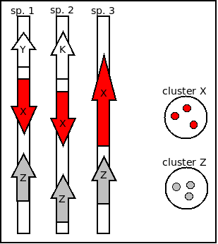
|
Sometimes we will need to compare clusters of possibly orthologous sequences, produced by get_homologues.pl
in any of the ways explained earlier, with a set of sequences defined elsewere, for instance in a publication.
This can be done to validate a set of core clusters and to check that nothing important was left out.
We can accomplish just this with help from script compare_clusters.pl, invoking option -r,
which indicates that the first parsed cluster folder is actually a reference to be compared.
To illustrate this application we have set a folder with 4 protein sequences from Buchnera aphidicola from strain Cinara cedri
(directory sample_buch_fasta/sample_proteins), each sequence in a single FASTA file. Note that these clusters must contain
sequences contained in the larger dataset which we want to compare with, otherwise the script will not match them. Headers are not
used by the program, only the sequences matter.
In order to check whether these sequences are clustered in any of the clusters generated earlier, say with BDBH,
we will issue a command such as:
./compare_clusters.pl -o sample_intersection -r -d \
sample_buch_fasta/sample_proteins,\
sample_buch_fasta_homologues/BuchaphCc_f0_alltaxa_algBDBH_e0_\
The following output should be produced:
# number of input cluster directories = 2
# parsing clusters in sample_buch_fasta/sample_proteins ...
# no cluster list in place, checking directory content ...
# WARNING: [taxon names] will be automatically extracted from FASTA headers,
# please watch out for errors
# number of clusters = 4
# parsing clusters in sample_buch_fasta_homologues/BuchaphCc_f0_alltaxa_algBDBH_e0_ ...
# cluster_list in place, will parse it ([...]/BuchaphCc_f0_alltaxa_algBDBH_e0_.cluster_list)
# number of clusters = 305
# intersection output directory: sample_intersection
# intersection size = 4 clusters
# intersection list = sample_intersection/intersection_t0.cluster_list
# input set: sample_intersection/sample_proteins.venn_t0.txt
# input set: sample_intersection/BuchaphCc_f0_alltaxa_algBDBH_e0_.venn_t0.txt
# Venn diagram = sample_intersection/venn_t0.pdf
# Venn region file: sample_intersection/unique_sample_proteins.venn_t0.txt (0)
# Venn region file: sample_intersection/unique_BuchaphCc_f0_alltaxa_algBDBH_e0_.venn_t0.txt (301)
4.7 Clustering intergenic segments from GenBank files
The use of input files in GenBank format also allows the extraction of clusters
of flanked orthologous intergenic regions, which might be of interest as these are expected to
mutate at higher rates compared to coding sequences. In this example this feature is
illustrated by processing folder sample_plasmids_gbk with options
-g -I sample_plasmids_gbk/include_list.txt
The restraints that apply to the parsed
intergenic regions are defined by three global variables variables within get_homologues.pl,
as explained in section 3.4. These default values might be edited for specific taks;
for instance, chloroplast intergenic regions are usually much smaller than 200 bases, the default size,
and therefore variable $MININTERGENESIZE should be set to a smaller value.
Moreover, in this example we restrict the search for conserved intergenic segments to
Klebsiella pneumoniae plasmids,
by creating a file sample_plasmids_gbk/include_list.txt with these contents:
K_pneumoniae_12_plasmid_12.gb
K_pneumoniae_9_plasmid_9.gb
K_pneumoniae_KP96_plasmid_pKP96.gb
We can now execute
$ ./get_homologues.pl -d sample_plasmids_gbk -g -I sample_plasmids_gbk/include_list.txt:
# results_directory=sample_plasmids_gbk_homologues
# parameters: MAXEVALUEBLASTSEARCH=0.01 MAXPFAMSEQS=250
# checking input files...
# E_coli_ST131_plasmid_pKC394.gb 55 (intergenes=7)
# E_coli_plasmid_pMUR050.gb 60 (intergenes=12)
# IncN_plasmid_R46.gb 63 (intergenes=11)
# K_oxytoca_plasmid_pKOX105.gb 69 (intergenes=13)
# K_pneumoniae_12_plasmid_12.gb 92 (intergenes=11)
# K_pneumoniae_9_plasmid_9.gb 87 (intergenes=12)
# K_pneumoniae_KP96_plasmid_pKP96.gb 64 (intergenes=18)
# S_enterica_subsp_enterica_serovar_Dublin_plasmid_pMAK2.gb 52 (intergenes=9)
# Uncultured_bacterium_plasmid_pRSB201.gb 58 (intergenes=9)
# Uncultured_bacterium_plasmid_pRSB203.gb 49 (intergenes=7)
# Uncultured_bacterium_plasmid_pRSB205.gb 52 (intergenes=8)
# Uncultured_bacterium_plasmid_pRSB206.gb 55 (intergenes=10)
# 12 genomes, 756 sequences
# included input files (3):
: K_pneumoniae_12_plasmid_12.gb K_pneumoniae_12_plasmid_12.gb 92
: K_pneumoniae_9_plasmid_9.gb K_pneumoniae_9_plasmid_9.gb 87
: K_pneumoniae_KP96_plasmid_pKP96.gb K_pneumoniae_KP96_plasmid_pKP96.gb 64
[...]
# looking for valid ORF clusters (n_of_taxa=3)...
# number_of_clusters = 31
# cluster_list = sample_plasmids_gbk_homologues/[...]include_list.txt_algBDBH_e0_.cluster_list
# cluster_directory = sample_plasmids_gbk_homologues/[...]include_list.txt_algBDBH_e0_
# looking for valid clusters of intergenic regions (n_of_taxa=3)...
# parameters: MININTERGENESIZE=200 MAXINTERGENESIZE=700 INTERGENEFLANKORF=180
# number_of_intergenic_clusters = 1
# intergenic_cluster_list = [...]/[...]_intergenic200_700_180_.cluster_list
# intergenic_cluster_directory = sample_plasmids_gbk_homologues/[...]_intergenic200_700_180_
# runtime: 1 wallclock secs ( 0.10 usr 0.01 sys + 0.05 cusr 0.01 csys = 0.17 CPU)
# RAM use: 67.8 MB
Intergenic clusters, illustrated by Figure 3.4, include upper-case nucleotides
to mark up the sequence of flanking ORFs, with the intergenic region itself in lower-case,
and the names of the flanking ORFs in the FASTA header, with their strand in parentheses:
>1 | intergenic18|coords:63706..64479|length:774|neighbours:GI:165928631(-1),GI:165928630(1)...
CGCGCCATTGCTGGCCTGAAGGTATTCCCAATACCCTCCCTGGTAGTCTTTAGCGTAACGATTCAGAAAGGACTGAATGAAGTGATCTGCGCTGAAGAAAGCG
CCACGAAATGCCGCAGGCATGAAGTTCATGCGGGCGTTTTCAGAAATGTAGCGGGCGGTGATTTCGATAGTTTCCATgatacttcctctttaagccgataccg
gcgatggttaagcggcaggcacatcacctgccactttttaattatcgtacaatggggcgttaaagtcaatacaagtacggattatatttacctaattttatgc
ccgtcagagcatggaaggcgacctcgccggactccaccggacaccgggggcaaatcgccggaaactgcgggactgaccggagcgacaggccacccccctccct
gctagcccgccgccacgcggccggttacaggggacactgagaaagcagaaagccaacaaacactatatatagcgttcgttggcagctgaagcagcactacata
tagtagagtacctgtaaaacttgccaacctgaccataacagcgatactgtataagtaaacagtgatttggaagatcgctATGAAGGTCGATATTTTTGAAAGC
TCCGGCGCCAGCCGGGTACACAGCATCCCTTTTTATCTGCAAAGAATTTCTGCGGGGTTCCCCAGCCCGGCCCAGGGCTATGAAAAGCAGGAGTTAAACCTGC
ATGAGTATTGTGTTCGTCACCCTTCAGCAACTTACTTCCTGCGGGTTTCTGGC
>2 | intergenic3|coords:9538..10293|length:756|neighbours:GI:209574108(-1),GI:209574109(1)...
CGCGCCATTGCTGGCCTGAAGGTATTCCCAATACCCTCCCTGGTAGTCTTTAGCGTAACGATTCAGAAAGGACTGAATGAAGTGATCTGCGCTGAAGAAAGCG
CCACGAAATGCCGCAGGCATGAAGTTCATGCGGGCGTTTTCAGAAATGTAGCGGGCGGTGATTTCGATAGTTTCCATgatacttcctctttaagccgataccg
gcgatggttaagcggcaggcacatcacctgccactttttaattatcgtacaatggggcgttaaagtcaatacaagtacggattatatttacctaattttatgc
ccgtcagagcatggaaggcgacctcgccggactccaccggacaccgggggcaaatcgccggaaactgcgggactgaccggagcgacaggccacccccctccct
gctagcccgccgccacgcggccggttacaggggacactgagaaagcagaaagccaacaaacactatatatagcgttcgttggcagctgaagcagcactacata
tagtagagtacctgtaaaacttgccaacctgaccataacagcgatactgtataagtaaacaGTGATTTGGAAGATCGCTATGAAGGTCGATATTTTTGAAAGC
TCCGGCGCCAGCCGGGTACACAGCATCCCTTTTTATCTGCAAAGAATTTCTGCGGGGTTCCCCAGCCCGGCCCAGGGCTATGAAAAGCAGGAGTTAAACCTGC
ATGAGTATTGTGTTCGTCACCCTTCAGCAACTTAC
...
The next few examples illustrate how get_homologues.pl might be used to analyze the genomic evolution
of a group of related organisms, the core-genome and the pan-genome, using the terms coined
by Tettelin and collaborators (PubMed=16172379).
4.8.1 Obtaining a pangenome matrix
First we will try option -t 0 in combination with the OMCL or the COG algorithms.
By enforcing this option we are actually asking for all possible clusters, including those which might not
contain sequences from all input genomes (taxa). For this reason the use of this option usually means
that a large number of clusters are reported. This is particularly true for COG runs, since this algorithm
does not resolve clusters involving less than 3 genomes. The default algorithm BDBH is not available with this option.
For instance, by calling
$ ./get_homologues.pl -d sample_plasmids_gbk -t 0 -G we obtain 199 clusters:
[...]
# looking for valid ORF clusters (n_of_taxa=0)...
# number_of_clusters = 199
# cluster_list = [...]/EcoliplasmidpMUR050_f0_0taxa_algCOG_e0_.cluster_list
# cluster_directory = sample_plasmids_gbk_homologues/EcoliplasmidpMUR050_f0_0taxa_algCOG_e0_
By choosing the OMCL algorithm we obtain a smaller set of clusters, which we can test by typing on the terminal
$ ./get_homologues.pl -d sample_plasmids_gbk -t 0 -M:
[...]
# looking for valid ORF clusters (n_of_taxa=0)...
# number_of_clusters = 193
# cluster_list = [...]/EcoliplasmidpMUR050_f0_0taxa_algOMCL_e0_.cluster_list
# cluster_directory = sample_plasmids_gbk_homologues/EcoliplasmidpMUR050_f0_0taxa_algOMCL_e0_
We can now take advantage of script compare_clusters.pl, and the generated cluster directories,
to compile the corresponding pangenome matrix. This can be accomplished for a single cluster set:
./compare_clusters.pl -o sample_intersection -m -d \
sample_plasmids_gbk_homologues/Uncultured[...]_f0_0taxa_algCOG_e0_
or for the intersection of several sets, in order to get a consensus pangenome matrix:
./compare_clusters.pl -o sample_intersection -m -d \
sample_plasmids_gbk_homologues/Uncultured[...]_f0_0taxa_algCOG_e0_,\
sample_plasmids_gbk_homologues/Uncultured[...]_f0_0taxa_algOMCL_e0_
The ouput of the latter command will include the following lines:
[...]
# number of input cluster directories = 2
# parsing clusters in sample_plasmids_gbk_homologues/Uncultured[...]_f0_0taxa_algCOG_e0_ ...
# cluster_list in place, will parse it ([...]/Uncultured[...]_f0_0taxa_algCOG_e0_.cluster_list)
# ERROR: skipping cluster 62_transposase.faa , seems to duplicate 59_transposase.faa
# ERROR: skipping cluster 116_tnpA.faa , seems to duplicate 59_transposase.faa
# number of clusters = 197
# parsing clusters in sample_plasmids_gbk_homologues/Uncultured[...]_f0_0taxa_algOMCL_e0_ ...
# cluster_list in place, will parse it ([...]/Uncultured[...]_f0_0taxa_algOMCL_e0_.cluster_list)
# number of clusters = 193
[...]
# intersection size = 180 clusters
# intersection list = sample_intersection/intersection_t0.cluster_list
# pangenome_file = sample_intersection/pangenome_matrix_t0.tab
# pangenome_phylip file = sample_intersection/pangenome_matrix_t0.phylip
# input set: sample_intersection/Uncultured[...]_f0_0taxa_algCOG_e0_.venn_t0.txt
# input set: sample_intersection/Uncultured[...]_f0_0taxa_algOMCL_e0_.venn_t0.txt
# Venn diagram = sample_intersection/venn_t0.pdf
# Venn region file: sample_intersection/unique_Uncultured[...]_f0_0taxa_algCOG_e0_.venn_t0.txt (17)
# Venn region file: sample_intersection/unique_Uncultured[...]_f0_0taxa_algOMCL_e0_.venn_t0.txt (13)
Note that skipped clusters correspond precisely to COG unresolved clusters.
This script produces two versions of the same pangenomic matrix:
- A full detailed matrix in tab-separated columns, with taxa/genomes as rows and sequence clusters as columns,
in which cells with natural numbers indicate whether a given taxa contains one or more sequences from a given cluster.
Such files can be read and edited with any text editor or spreadsheet software.
source:folder 3_EcoRII.faa 8_tnpA.faa 22_traA.faa 36_beta-lactamase[...]
K_pneumoniae_12_plasmid_12.gb 1 0 1 2
K_pneumoniae_9_plasmid_9.gb 1 0 0 2
K_oxytoca_plasmid_pKOX105.gb 1 0 1 1
[...]
- A reduced binary matrix in a format suitable for
PHYLIP
discrete character analysis software,
which looks like this:
12 180 <-12 taxa, 180 clusters
0000000000 0000000011001000000000100000111111101100000000000 ...
0000000001 0000000010000000000000000000000000001000000000000 ...
0000000002 0000000010000000000000100000000001111111111111111
0000000003 0000000010000000000000000000000000000000000000000
0000000004 0000000010000000000000000000000000000000010000000
0000000005 0000000110011100100000101000000000100001000000000
0000000006 0000000011000000000000100000000000000000000000000
0000000007 0000000001011000000001111111111110000000000000000
0000000008 0000000101111111111111000000000000000000000000000
0000000009 0000000000000000000000000000000000000000000000000
0000000010 0000000010001000000000000000000000000000000000000
0000000011 1111111110000000000000000000000000000000000000000 ...
Indeed, when option -T is toggled, as in the next example,
./compare_clusters.pl -o sample_intersection -m -T -d \
sample_plasmids_gbk_homologues/Uncultured[...]_f0_0taxa_algCOG_e0_,\
sample_plasmids_gbk_homologues/Uncultured[...]_f0_0taxa_algOMCL_e0_
then the script calls program PARS from the
PHYLIP suite
to produce one or more alternative parsimony trees that capture the phylogeny implied in this matrix, adding the following
lines to the produced output:
# parsimony results by PARS (PHYLIP suite, evolution.genetics.washington.edu/phylip/doc/pars.html):
# pangenome_phylip tree = sample_intersection/pangenome_matrix_t0.phylip.ph
# pangenome_phylip log = sample_intersection/pangenome_matrix_t0.phylip.log
Please note that the resulting Newick format
.ph file can contain several trees
separated by ';', one per line. In order to plot them, as in the next figure, it might be necessary, depending on the software used,
to leave only one. This is the case for instance for MEGA or TreeView.
A complementary view of the same data con be obtained with script plot_matrix_heatmap.sh:
cd sample_intersection
../plot_matrix_heatmap.sh -i pangenome_matrix_t0.tab
Figure 9:
Example of pangenomic tree of the consensus COG and OMCL pangenomic matrix obtained for a few plasmids.
Such trees can be useful to create the A and B lists discussed in the next section.
Plot produced with FigTree, with midpoint root.
|
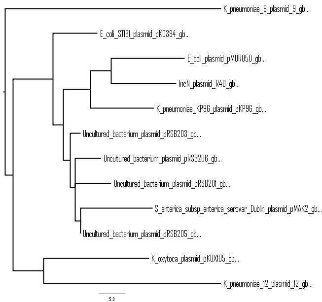
|
Figure 10:
Heatmap of the previous pangenome matrix, with dendrograms sorting genomes and sequence clusters.
|
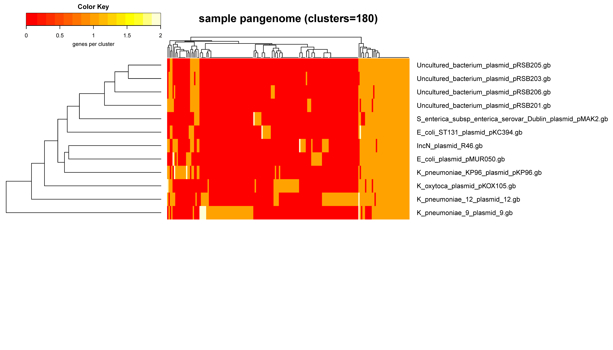
|
4.8.2 Interrogating a pangenome matrix
Script parse_pangenome_matrix.pl can be used to analyze a pangenome matrix,
such as that created in the previous section.
It was primarily designed to identify genes present in a group A of species which are absent in another
group B, but can also be used to find expansions/contractions of gene families.
If you require the genes present/expanded in B with respect to A, just reverse them.
Expanded clusters are defined as those where all A taxa contain more sequences than the maximum
number of corresponding sequences in any taxa of group B.
We now review these features with the same plasmid set of previous sections, analyzing the pangenome matrix
produced by intersecting several cluster sets on section 4.8.1.
Let's say we are interested
in finding plasmid genes present in Klebsiella oxytoca which are not encoded in K.pneumoniae KP96.
In order to do this we first create a couple of text files to define sets A and B,
called A.txt and B.txt, which we place inside folder sample_plasmids_gbk.
The content of A and B files should be one line per species. In this example file
A.txt contains a single line:
K_oxytoca_plasmid_pKOX105.gb
As well as B.txt:
K_pneumoniae_KP96_plasmid_pKP96.gb
We can now execute the script as follows:
./parse_pangenome_matrix.pl -m sample_intersection/pangenome_matrix_t0.tab \
-A sample_plasmids_gbk/A.txt -B sample_plasmids_gbk/B.txt -g
The output should be:
# matrix contains 180 clusters and 12 taxa
# taxa included in group A = 1
# taxa included in group B = 1
# finding genes present in A which are absent in B ...
# file with genes present in set A and absent in B (21): [...]pangenome_matrix_t0__pangenes_list.txt
It can be seen that 21 genes were found to be present in A and absent in B.
In the case of pangenome matrices derived from GenBank files, as in this example, it is possible to
produce a map of these genes in the genomic context of any species included in A, which should be queried using
option -l. A valid syntax would be:
./parse_pangenome_matrix.pl -m sample_intersection/pangenome_matrix_t0.tab \
-A sample_plasmids_gbk/A.txt -B sample_plasmids_gbk/B.txt -g \
-p 'Klebsiella oxytoca KOX105'
Figure 11:
Map of plasmid OX105 highlighting 7 genes absent in pKP96.
|
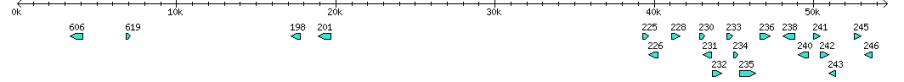
|
By default, parse_pangenome_matrix.pl requires present genes to be present in all genomes of A and none of B.
However, as genomes might not be completelly annotated, it is possible to make these tests more flexible by controlling the cutoff for inclusion,
by using flag -P. For instance, the next command will require genes to be present only in 90% of A genomes and missing in 90% of B genomes:
./parse_pangenome_matrix.pl -m sample_intersection/pangenome_matrix_t0.tab \
-A sample_plasmids_gbk/A.txt -B sample_plasmids_gbk/B.txt -g -P 90
Note that the most flexible way of finding out genes absent in a set of genomes within a pangenome matrix is by using option -a,
which does not require an A list, rather a B list is sufficient. It is called as in the example:
./parse_pangenome_matrix.pl -m sample_intersection/pangenome_matrix_t0.tab \
-B sample_plasmids_gbk/B.txt -a
4.8.3 Calculating cloud, shell and core genomes
parse_pangenome_matrix.pl can also be employed to classify genes in these four compartments:
Table 3:
Definitions of pangenome compartments as used by parse_pangenome_matrix.pl.
| core |
Genes contained in all considered genomes/taxa. |
| soft core |
Genes contained in 95% of the considered genomes/taxa, as in the work of Kaas and collaborators (PubMed=23114024). |
| cloud |
Genes present only in a few genomes/taxa. The cutoff is defined as the class next to the most populated non-core
cluster class. |
| shell |
Remaining genes, present in several genomes/taxa. |
|
The script is invoked as follows:
./parse_pangenome_matrix.pl -m sample_intersection/pangenome_matrix_t0.tab -s
The output is as follows:
# matrix contains 180 clusters and 12 taxa
# cloud size: 124 list: sample_intersection/pangenome_matrix_t0__cloud_list.txt
# shell size: 23 list: sample_intersection/pangenome_matrix_t0__shell_list.txt
# soft core size: 33 list: sample_intersection/pangenome_matrix_t0__softcore_list.txt
# core size: 24 (included in soft core) list: sample_intersection/pangenome_matrix_t0__core_list.txt
# globals controlling R plots: $YLIMRATIO=1.2
# shell bar plots: sample_intersection/pangenome_matrix_t0__shell.png , [...]shell.pdf
# shell circle plots: sample_intersection/pangenome_matrix_t0__shell_circle.png , [...]circle.pdf
# pan-genome size estimates (Snipen mixture model PMID:19691844): [...]shell_estimates.tab
Core.size Pan.size BIC LogLikelihood
2 components 24 193 1056.08217644576 -520.251652946544
3 components 23 370 583.140322949438 -278.587769347493
4 components 14 417 570.835786136617 -267.242544090193
5 components 13 703 579.364023427564 -266.313705884776
6 components 12 954 589.754861142051 -266.31616789113
7 components 13 808 600.134442088951 -266.313001513689
8 components 8 549 610.689900917556 -266.397774077102
9 components 0 572 621.283299953595 -266.501516744231
10 components 0 489 632.354613188809 -266.844216
Sample 24 180 NA NA
Apart from text files listing the cluster names that take part in each of the four compartments, two types of plots are
generated. The lenght of Y-axes in barplots can be controlled with global variable $YLIMRATIO.
Note that the output also includes estimates of the pan- and core-genome sizes as calculated by the
binomial mixture model of Snipen and collaborators
(PubMed=19691844).
A simple interpretation is that as soon as likelihood converges then adding more
components does not improve the mixture model. Please check that paper for a full explanation.
Figure 12:
Barplot of the pangenome matrix created in section 4.8.1.
Core clusters are in white for clarity, but note that according to the definitions in Table 3 the soft core also includes the strict core.
|
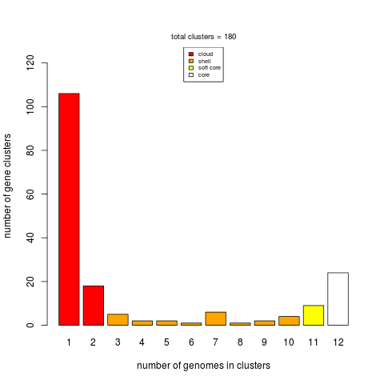
|
Figure 13:
Area plot of the pangenome matrix created in section 4.8.1.
Note that the soft core compartment includes also the core, as implied by the definition in Table 3.
|
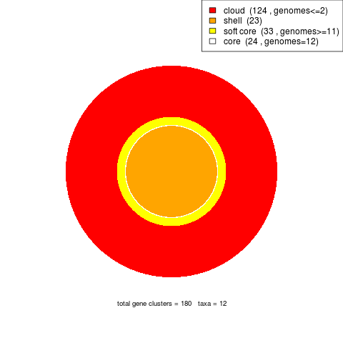
|
4.8.4 Estimating core/pan-genome size by sampling genomes
The pioneer work of Tettelin and collaborators
(PubMed=16172379) unveiled
that bacterial genomes are dynamic containers that harbour essential genes and also
accessory elements, which might be unique to each community. get_homologues.pl can be used
to perform such genome composition analyses.
The rationale is to sample a set of genomes (present in the input folder) and keep adding genome
after genome keeping track of i) the novel genes added to the pool and ii) the genes that fall in
pre-existing clusters.
This sampling experiment can be done with any of the included 3 algorithms (please see Table 2),
by invoking option -c . For instance, we could try $ ./get_homologues.pl -d sample_buch_fasta -c:
[... same as first example ...]
# genome composition report (samples=10,permutations=24)
# genomic report parameters: MIN_PERSEQID_HOM=0 MIN_COVERAGE_HOM=20
# genome order:
# 0 Buch_aph_APS.faa
# 1 Buch_aph_Bp.faa
# 2 Buch_aph_Cc.faa
# 3 Buch_aphid_Sg.faa
## sample 0 (Buch_aph_APS.faa | 0,1,2,3,)
# adding Buch_aph_APS.faa: core=574 pan=574
[...]
# pan-genome (number of genes, can be plotted with plot_pancore_matrix.pl)
# file=sample_buch_fasta_homologues/pan_genome_algBDBH.tab
genomes mean stddev | samples
0 490 90 | 574 507 507 546 357 357 546 574 357 574
1 572 28 | 598 585 585 587 521 521 562 592 575 598
2 597 5 | 606 593 594 594 594 596 600 599 591 606
3 608 5 | 615 602 600 608 605 605 611 613 605 615
# core-genome (number of genes, can be plotted with plot_pancore_matrix.pl)
# file=sample_buch_fasta_homologues/core_genome_algBDBH.tab
genomes mean stddev | samples
0 490 90 | 574 507 507 546 357 357 546 574 357 574
1 420 82 | 466 466 466 523 324 324 317 523 324 466
2 327 36 | 319 319 434 315 310 315 313 318 309 319
3 310 4 | 313 313 313 311 304 304 311 313 304 313
[... same as first example ...]
Figure 14:
Core-genome (left) and pan-genome (right) estimates after ten random samples of 4 taxa.
Fitted curves follow functions first proposed by Tettelin in 2005
(PubMed=16172379).
Residual standard errors are reported on the right margin as a measure of the goodness of fit.
|
|
As can be seen, the output now contains two data frames which summarize the
genome composition analysis done by sampling, which are also stored as tab-separated files.
These text files can be used to plot the core- and pan-genome, with help from
the accompanying script plot_pancore_matrix.pl. A suitable command would be:
./plot_pancore_matrix.pl -i sample_buch_fasta_homologues/core_genome_algBDBH.tab -f core_Tettelin
The script also supports the core function as modified by Willenbrock and
collaborators (PubMed=18088402),
as shown on the next figure in a more realistic set of 35 genomes. Both fits can be superimposed
by calling option -f core_both.
Besides standard core- and pan-genomes, it is possible to estimate the evolution of the soft core-genome,
which is a relaxed version of the core that considers genes found in a fraction (by default 0.95) of genomes, and thus accommodates
some annotation or assembly errors. This experiment can be done with either the OMCl or COGS algorithms
by invoking options -c -z. The resulting data file can be plotted the same way.
Figure 15:
Core-genome estimate after ten random samples of 35 taxa.
|
|
The genome composition analyses presented so far are actually random sampling experiments.
It is thus worth mentioning that the user can control the order in which genomes are sampled during
these simulations, by enforcing a list of genomes with option -I, already introduced in section 4.7,
or by setting the seed of the random number generator with option -R.
In the first case only one sampling is performed and therefore the standard deviation of the core and pan values is zero.
The second strategy ensures that sampling order is conserved in different program executions and thus allows merging CDS
core-genomes and non-coding genes (such as rRNAs) core-genomes computed separately over the same set of taxa, with help from
accompanying script add_pancore_matrices.pl.
4.8.5 Calculating Pfam enrichment of cluster sets
Provided that Pfam domains have been annotated in advance (see section 4.4),
it is possible to calculate whether a set of clusters, for instance those that take part of the shell (see 4.8.3),
are enriched on a set of protein domains. To this end pfam_enrich.pl can be invoked as follows:
$ ./pfam_enrich.pl -d sample_plasmids_gbk_homologues/ \
-c sample_plasmids_gbk_homologues/UnculturedbacteriumplasmidpRSB203_f0_0taxa_algOMCL_e0_ \
-x sample_intersection/pangenome_matrix_t0__shell_list.txt -t less -p 1.0
There are several input data required for this kind analysis:
- A folder containing previously computed Pfam-annotations (
-d).
- A directory with FASTA-format cluster files (
-c), obtained on earlier steps. These will be the 'control' set.
- A file with a list of clusters defining a subset of 'experiment' clusters (
-x).
- The desired type of Fisher's exact test,
either
greater, two.sided or less, as in this example. The default is greater, which will test for Pfam
domains over-represented in 'experiment' clusters. Instead, greater tests for under-represented Pfam domains.
- A threshold on FDR-adjusted P-values, set to 0.05 by default. Note that in this toy example it was set to 1.0
- Optionally flag
-r can be used to sample only sequences from a selected reference taxon.
- If using nucleotide clusters, then option
-n should be called.
The output is as follows:
# parsing clusters...
# 756 sequences extracted from 193 clusters
# total experiment sequence ids = 148
# total control sequence ids = 756
# parse_Pfam_freqs: set1 = 19 Pfams set2 = 103 Pfams
# fisher exact test type: 'less'
# multi-testing p-value adjustment: fdr
# adjusted p-value threshold: 1
# total annotated domains: experiment=19 control=144
#PfamID counts(exp) counts(ctr) freq(exp) freq(ctr) p-value p-value(adj) description
PF00239 0 6 0.000e+00 4.167e-02 4.833e-01 9.860e-01 Resolvase, N terminal domain
PF01526 0 6 0.000e+00 4.167e-02 4.833e-01 9.860e-01 Tn3 transposase DDE domain
PF02796 0 3 0.000e+00 2.083e-02 6.928e-01 9.860e-01 Helix-turn-helix domain of resolvase
PF12681 0 3 0.000e+00 2.083e-02 6.928e-01 9.860e-01 Glyoxalase-like domain
[...]
4.8.6 Estimating average identity matrices
If we recall for a moment the example GenBank files analyzed on section 4.3 we can
demonstrate how to calculate average identity matrices, which can then be used to compare genome members of
a pangenome. To do so we will add a few flags to the previous command, in addition to flag -A, which specifically
asks for an identity matrix to be calculated: $ ./get_homologues.pl -d sample_plasmids_gbk -A -t 0 -M
This will produce the following output:
[...]
# number_of_clusters = 193
# cluster_list = [...]/UnculturedbacteriumplasmidpRSB203_f0_0taxa_algOMCL_e0_.cluster_list
# cluster_directory = [...]/UnculturedbacteriumplasmidpRSB203_f0_0taxa_algOMCL_e0_
# average_identity_matrix_file =
# [...]/UnculturedbacteriumplasmidpRSB203_f0_0taxa_algOMCL_e0_Avg_identity.tab
# NOTE: matrix computed on blastp results
Note that on this example the produced identity matrix was calculated with the BLASTP scores among protein sequences included on the resulting
clusters (193). If average nucleotide identities are desired the command must be modified to:
$ ./get_homologues.pl -d sample_plasmids_gbk -a 'CDS' -A -t 0 -M
Such matrices can then be used to calculate heatmaps and dendrograms that capture how similar the coding sequences are among genomes.
An example of this would be:
cd sample_plasmids_gbk_homologues
../hcluster_matrix.sh -i EcoliST131plasmidpKC394_f0_0taxa_CDS_algOMCL_e0_Avg_identity.tab
Figure 16:
Example heatmap derived from an average nucleotide identity matrix calculated with get_homologues.pl.
|
|
4.8.7 Finding out best hits of a particular sequence
After running get_homologues with almost any set of parameters, you will always end up with a lot of BLAST files
of all-against-all involved taxa. The accompanying script check_BDBHs.pl can help you find out which are the best BLAST
hits of any sequence that might interest you.
First, as cluster names are not always informative, you'll need to find out the internal identifier used by the software to handle your
target sequence. For instance, we might want to investigate protein CspE among our 4 Buchnera taxa. The command to achieve this would be:
$ ./check_BDBHs.pl -d sample_buch_fasta_homologues -g -i CspE:
And we obtain:
# Sequences containing label CspE:
1360,Buch_aph_Cc.faa,gi|116515229|ref|YP_802858.1| CspE [Buchnera aphidicola str. Cc (Cinara cedri)]
Now that we know the identifier (1360), we can check its best hits:
$ ./check_BDBHs.pl -d sample_buch_fasta_homologues -i 1360
Output contains the identifiers of best hits in both directions, their bit-scores, E-values,
alignment %coverages and annotated Pfam protein domains when available:
# query = 1360
# query fullname = gi|116515229|ref|YP_802858.1| CspE [Buchnera aphidicola str. Cc (Cinara cedri)]
# list of bidirectional best-hits:
dir query sbjct bits Eval %ident cover Pfam annotation
: [Buch_aph_APS.faa]
> 1360 467 136 4e-42 97.1 100.0 NA gi|15617086|..cold shock protein E
< 467 1360 136 4e-42 97.1 100.0 NA
: [Buch_aph_Bp.faa]
> 1360 972 135 1e-41 95.7 100.0 NA gi|27904911|..cold shock protein E
< 972 1360 135 1e-41 95.7 100.0 NA
: [Buch_aphid_Sg.faa]
> 1360 1883 136 4e-42 97.1 100.0 NA gi|21672738|..cold shock protein E
< 1883 1360 136 4e-42 97.1 100.0 NA
If previous get_homologues jobs included the calculation of Pfam domains, then option -D can be added to
produce a richer report, that now includes the identifiers of Pfam domains such as
PF00313, sorted on their position along the sequence:
dir query sbjct bits Eval %ident cover Pfam annotation
: [Buch_aph_APS.faa]
> 1360 467 136 4e-42 97.1 100.0 PF00313, gi|15617086|..cold shock protein E
< 467 1360 136 4e-42 97.1 100.0 PF00313,
...
Note that this script works by parsing files all.p2o.csv and all.bpo, which are created at run-time by
get_homologues in folder tmp/ within the results directory.
These are text files that can be inspected with help from any text editor.
4.9 A script to test most get_homologues features with a sample dataset
File HOWTOTettelin is a shell script which performs typical uses of get_homologues.pl.
This script can be made executable on the terminal with: $ chmod +x HOWTOTettelin
and then executed with: $ ./HOWTOTettelin
The first task carried out by the script is to download the same GenBank files used in the landmark work of Tettelin
and collaborators (PubMed=16172379); afterwards
several analyses are sequentially undertaken:
# 1.0) optionally download genomes in GenBank format from NCBI FTP site
cd test_Streptococcus
../download_genomes_ncbi.pl test_Streptococcus_download_list.txt
cd ..
# 1.1) run BLAST jobs with 4 CPU cores and optionally HMMER
./get_homologues.pl -d test_Streptococcus/ -n 4 -o
./get_homologues.pl -d test_Streptococcus/ -n 4 -D -o
# 1.2) calculate core-genomes with all BDBH, OMCL & COG algorithms
./get_homologues.pl -d test_Streptococcus/
./get_homologues.pl -d test_Streptococcus/ -M
./get_homologues.pl -d test_Streptococcus/ -G
./get_homologues.pl -d test_Streptococcus/ -M -D
# 1.3) calculate consensus core-genome with syntenic genes
./compare_clusters.pl -s -n -o test_Streptococcus_intersection -d \
test_Streptococcus_homologues/S_f0_alltaxa_algCOG_e0_,\
test_Streptococcus_homologues/S_f0_alltaxa_algOMCL_e0_,\
test_Streptococcus_homologues/S_f0_alltaxa_algBDBH_e0_
# 1.4) calculate core-genome with coverage and identity as in the Tettelin paper (cover=50%,%ID=50)
./get_homologues.pl -d test_Streptococcus/ -M -C 50 -S 50
# 1.6) calculate core intergenic clusters
./get_homologues.pl -d test_Streptococcus/ -g
# 1.7) estimate and plot core- and pangenome sizes with all BDBH, OMCL & COG algorithms
./get_homologues.pl -d test_Streptococcus/ -c
./get_homologues.pl -d test_Streptococcus/ -M -c
./get_homologues.pl -d test_Streptococcus/ -G -c
# 2.1) calculate pan-genome with OMCL & COG algorithms
./get_homologues.pl -d test_Streptococcus/ -M -t 0
./get_homologues.pl -d test_Streptococcus/ -G -t 0
# 2.2) build consensus pangenomic matrix
./compare_clusters.pl -d test_Streptococcus_homologues/S_f0_0taxa_algCOG_e0_,\
test_Streptococcus_homologues/S_f0_0taxa_algOMCL_e0_ -m -T -o test_Streptococcus_intersection
# 2.3) plot pangenomic compartments and estimate core- and pan-genome size with mixture models
./parse_pangenome_matrix.pl -m test_Streptococcus_intersection/pangenome_matrix_t0.tab -s
# 2.4) check accesory genes present in A genomes and absent in B
./parse_pangenome_matrix.pl -m test_Streptococcus_intersection/pangenome_matrix_t0.tab \
-A test_Streptococcus/A.list -B test_Streptococcus/B.list -g -e
Readers looking for a fully worked out
example, including a comprehensive interpretation of results, can read our book chapter
"Robust Identification of Orthologues and Paralogues for Microbial Pan-Genomics Using GET_HOMOLOGUES: A Case Study of pIncAC Plasmids"
(PubMed=25343868).
5 Frequently asked questions (FAQs)
- Is it necessary to have a computer cluster to run get_homologues.pl?
Not really. It can be run on a single machine, but if you have say, more than microbial genomes, the required all-against-all BLAST jobs
would take some time to complete, depending on your hardware. If this is your case we recommend setting option -n to the number
of cores of your processor,
as this way BLAST/HMMER jobs will be split and sent to different jobs and the required computing time proportionally reduced.
Figure 17:
Runtime of a typical bacterial genomic BLASTP jobs as calculated with 1 to 8 CPU cores when splitting the job in batches.
Note that the optimal batch size in this test is 100 sequences (compared to 250 and 500 sequences).
|
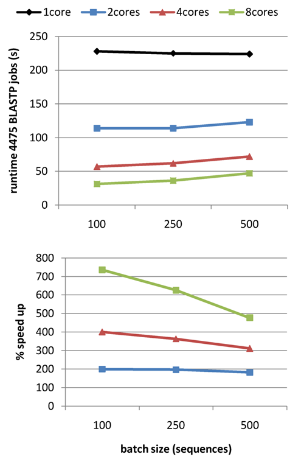
|
- How do I set up get_homologues.pl to run in a computer cluster?
Cluster jobs are submitted by invoking option -m cluster, instead of explicitely calling qsub.
The fist time such a job is run the following error can be seen:
# running BLAST searches ...
Unable to run job: You have to specify a queue, with the '-q' option to qsub.
Exiting.
[...]
This usually means that qsub jobs inside get_homologues.pl lack a target queue in the cluster.
Please find out the name of the right queue for your jobs, perhaps something as simple as such as -q default,
and edit the relevant line in the header of get_homologues.pl:
my $QUEUESETTINGS = ' -q default ';
- Does get_homologues.pl run on Windows?
As Perl is not installed by default on Windows, not BerkeleyDB is easily installed there, we haven't ported this software to these systems.
However, with some work, you could probably set up a windows machine to run get_homologues.pl and most of its dependencies.
Nevertheless, we have tested the package only on Linux and macOSX systems, and currently the only option for Windows users would be to set up a
VirtualBox
Linux box, and then installing get_homologues.pl there.
NOTE: If you don't know how to do this please check these resources:
Install-Ubuntu-on-VirtualBox
or
virtualboxes.
- How much memory does my computer require to run get_homologues.pl?
This depends directly on the size and number of the genomes to be analyzed.
A recent benchmark with 71 Mycobacterium genomes and 280k sequences yielded a RAM usage of just over 3700 MB,
confirming that versions 2.* have a much reduced memory footprint (see Figure 18, in the original
benchmark up to 40 microbial genomes could be analyzed on a 8Gb RAM Linux box).
Moreover, as mentioned in section 3.4, the -s flag option reduces the memory footprint of your
get_homologues up to 20-fold, allowing running large jobs in machines with small RAM resources.
Therefore, if you are running a large job that fails to finish succesfully, the most common
explanation would be that it was killed by the operating system for taking too much memory. In those cases it is
advisable to re-run the same job with the -s flag.
Figure 18:
Computing time and RAM requirements of the BDBH, COG and OMCL algorithms when processing input volumes of increasing size.
Performance is measured also with BerkeleyDB (-s flag).
|
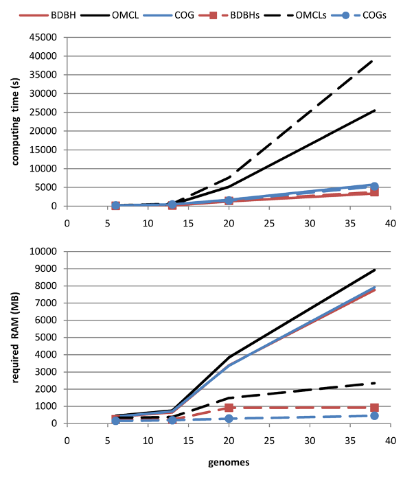
|
- What's the performance gain of v2?
After evolving parts of the original code base, and fixing some bugs (see CHANGES.txt), both
get_homologues.pl and get_homologues-est.pl have significantly improved their performance, as can be seen
in the figure, which combines data from the original benchmark and new data generated after v2 was in place.
Figure 19:
Computing time and RAM requirements of the original algorithm (OMCL, measured on 6 sequence sets)
as compared to the updated v2 code (measured on 3 three sets).
|
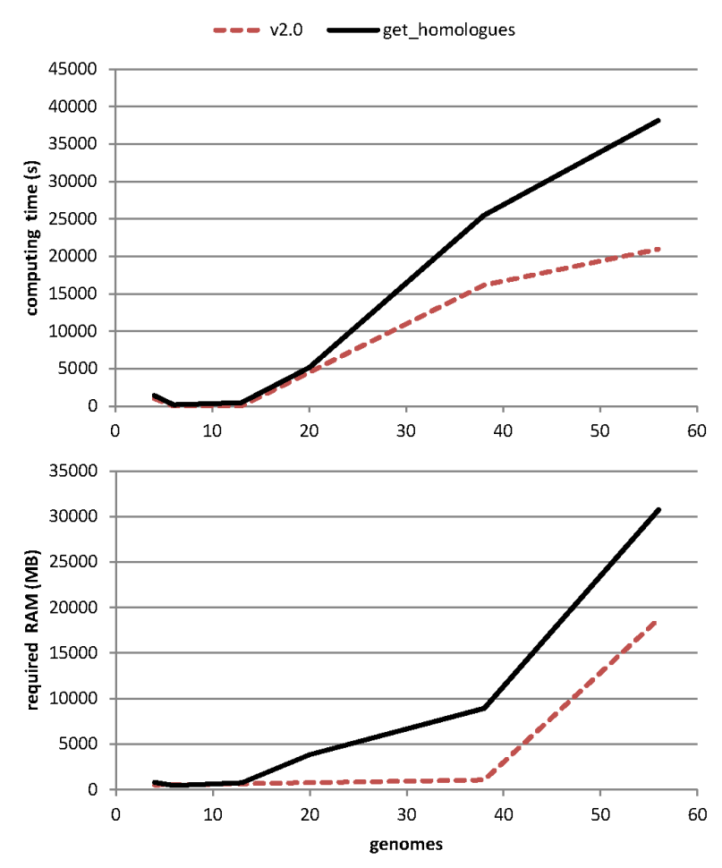
|
- BLAST jobs fail in my computer cluster, how can I sort this out?
When solving problems related with submitting jobs to the cluster it is
necessary to check the generated .queue files, which capture any errors that might occur during job submission.
If you check one of these files an find a message such as
blast: error while loading shared libraries: libbz2.so.1: cannot open shared object file
this means that some cluster nodes will require the installation of 32-bit compatibility library libbz2.so.1,
which can be done with root privileges typing this command from your cluster master node:
rocks run host compute "yum -y install bzip2-libs.i386"
Another solution would be to use BLAST binaries native to your cluster architecture, as explained in section 2.2.
- Why is it that I can't re-use BLAST results from the original get_homologues-est.pl after updating to get_homologues-est.pl?
In the v2 code family BLAST parsing evolved to capture -outfmt 6 'qseqid sseqid pident length qlen slen qstart qend sstart send evalue bitscore'.
However, the original code base was capturing different data columns and this implies that old BLAST results from previous releases won't work anymore.
- Is there any real scenario in that the default value for -S flag is the best option?
Option -S 1 means that two sequences can be considered orthologues or inparalogues with any sequence identity,
provided that
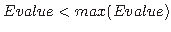 and alignment coverage is sufficient (-C). This can be useful when
comparing very divergent genomes/proteomes, where orthologues can be distant in terms of sequence.
If a reciprocal hit between genomes A and B is, say 30% identical, still it is a likely orthologue.
It could of course be a false positive, and that's why you need to know, perhaps by using -A, the average identity
among proteins in those genomes, and ultimately a gene phylogenetic tree, including species A, B and others to compare
to the species tree.
- Could you please explain a bit more what option
-o is good for?
This option is useful in situations like the following: you have access to a compute cluster with modern compute nodes (64bit cores and a good amount of memory),
but the master computer is an old, 32bit machine with limited RAM (say 1GB or less). Under such a setting, it would be convenient to distribute the first steps
of the pipeline (all against all BLAST jobs) on the cluster using options -o -m cluster. The downstream parsing of the BLAST results, which is
memory-consuming, could then be executed logged in from one of the more powerful compute nodes or from a powerful server.
- Would it be possible, after running the all-against-all BLAST jobs using option
-o, to log into three different compute nodes
and execute the downstream pipeline on each node for a different clustering algorithm (i.e. BDBHs, COG and OMCL)?
No, as each get_homologues.pl job requires exclusive access to the data directory and prevents other jobs to access it simultaneously.
- Does the -I option have any impact on the calculation of the core and pan genomes, including their graphical representations?
Of course, as this option enforces the program to sample once the list of genomes in the implicit order of the list. The fitting of pan-/core-genome
functions will be affected as there will be less points to do the noon-linear fitting.
- What is the minimum value for BLAST neighborhood correlation parameter?
This parameter captures the concept of BLAST neighborhood explained in
PubMed=18475320, and is calculated as a
a positive Pearson correlation coefficient. In this context, sequences A and B should have a similar list
of BLAST matches if they truly are orthologues.
This parameter is by default set to 0, so it takes no effect. As its values approaches to 1, it gets more difficult to call
bidirectional best hits, as they will be required to have very similar lists of BLAST hits.
- Could you explain a bit more about the meaning/effect of the
-t option?
You should use -t 0 (zero) when you need to get all clusters of homologous sequences.
This will generate files containing 2 or more homologous sequences from one or more taxa.
By default, get_homologues.pl sets t=numberOfTaxa, that is, it will provide the user with clusters of homologous sequences
that contain at least one sequence from each taxon. Note that singleton clusters (just one sequence per organism) will be produced
if combined with option -e, which excludes clusters containing inparalogues. In this later case, the resulting clusters will
contain only single copy genes from each taxon, i.e. the orthologues. This is convenient if you want to use resulting gene families
to do for example genome-level phylogenetic analyses using only the repertoire of orthologous single copy genes. Note, however, that
such clusters are not suitable for pangenome analyses. For such analyses, instead, please use auxiliary script compare_clusters.pl
with the set of clusters obtained with -t 0.
- And what about option -a, what are these other GenBank file features?
Thoroughly annotated genomes (see for example the GenBank file for Escherichia coli K12 MG1655: Escherichia_coli_K_12_substr__MG1655_uid225.gbk)
have many features, incluing ribosomal rRNAs, integenic spacers, tRNAas, 'mat_peptide', 'repeat_region', and miscellaneous features, noted as 'misc_feature',
in the corresponding GenBank files. Miscellaneous features report on diverse things such as cryptic prophages, the target sites of resolvases involved
in replicon replication, and many more "miscellaneous" features. Note that there is great heterogeneity both in the format and detail of annotating
genome features. By default, get_homologues.pl will extract only the 'CDS' feature (i.e. the sequences for protein-coding sequences) from the
GenBank file. By using option -a the user can select which features to parse, such as 'tRNA' or 'rRNA'.
- Could you explain what the inflation parameter of orthoMCL is and how to decide what value to use?
The original OrthoMCL paper (PubMed=12952885) explains it:
"[...] changing the inflation index affects cluster tightness: Lower inflation values result in the inclusion of more sequences in fewer groups,
whereas increasing the inflation index fragments clusters and reduces the number of sequences included".
In our benchmarks with bacterial genomes this parameter shows a very modest, negligible effect.
- I've run the get_homologues.pl pipeline some time ago. I would like to add some new genomes to the previous analysis.
How do I proceed so as to reuse as much of the previous computations as possible?
If you still conserve the original input folder with FASTA or GenBank sequence files and the results _homologues directory,
both contained in the same directory, all you will have to do is to copy the new sequence files to the input folder and re-run
get_homologues.pl. This will ensure that only new required BLAST/PFam searches are completed, conserving the previous results as much
as possible.
- How does get_homologues.pl decide how to name a certain cluster file? Is this affected by the use of -r?
Cluster files are named using gene names from the reference genome, or from the first included genome otherwise.
If a given genome R is selected with option -r then gene names from R will be used preferably.
It is possible to change the way clusters are named by editing subroutine extract_gene_name in file lib/phyTools.pm.
- What happens if I perform the above explained steps but using a different reference genome?
The most obvious effect is that any resulting clusters will now be named according to gene names of the new reference genome.
A more subtle consequence for BDBH jobs is that now all genomes are compared to this reference, see figure 3,
and this will change the order in which bidirectional best hits are computed.
- How are the gene clusters named if no -r reference genome is specified?
In this case the genome with the least number of genes/features will be taken as the reference,
and resulting sequence clusters will be named according to gene names of this reference genome,
which might not be the best annotated genome in your set. For this reason it is often a good idea to set as reference genome
one with a good annotation, for instance the species or strain described in RefSeq.
- I have 40 draft genomes annotated in gbk format and I am using get_homologues to obtain the core and pan genomes.
My plan is to run get_homologues with BDBH and -b to speed up the process. How can I choose the most appropriate reference genome?
Option -b is only suited for core-genome calculation, not pangenome. If this is really the desired task, the genome with the least number
of annotated genes should be used as a reference, which is what the program would do by default, or else the best-annotated among small genomes.
However, note that this sort of core-genome calculation is most sensitive to missing genes, usually due to poor automatic annotations, which is
why compiling a pangenome matrix is recommended when possible (see Section 4.8.1), so that a more robust soft-core can be estimated.
- Why does option '-t 0' not work with BDBH in get_homologues.pl? Is this also the reason BDBH cannot be used in a pangenome matrix analysis?
The reason is that BDBH uses a single reference genome and thus by definition cannot track genes not present in the reference.
Therefore, pangenome matrices produced by the BDBH algorithm would be incomplete, considering only clusters including genes from the reference genome.
For this reason BDBH is adequate for core-genome calculation, but not for pan-genomes.
- When the initial BLAST is being performed, does get_homologues.pl take into account the database size
(i.e. the number of genes being BLASTed), or because the BLASTing is not done as an all-vs-all manner, do you not consider this as a factor in the analysis?
Within lib/marfil_homology.pm there is a global variable $BLAST_DB_SIZE set to 100_000_000 for that purpose.
That value is the fixed effective search space during BLAST searches so that any resulting E-values are comparable, even across experiments
or algorithm (BDBH, OMCL, COGS).
- I would like to get information of inparalogues and orthologues from each genome. I found several files in the tmp directory,
such as
inparalogues_Buch_aph_APS.faa. Could you explain about the files or a method to extract the information?
According to our working definition, all sequences grouped together in the same .faa/.fna cluster are likely orthologues,
although you should always keep in mind that orthology is an evolutionary concept and therefore sequence-based approaches
such as those in get_homologues.pl are simpler approximations. What is different with inparalogues?
They are supposed to be duplicated genes that appeared after species separation, and therefore their orthology relationships
are many-to-one or many-to-many. Inparalogues are easy to spot in clusters produced by get_homologues.pl because
they are 2+ sequences from the same genome in the same cluster cluster. If you wish to know which inparalogue is most similar
to an orthologous gene the best option is to run check_BDBHs.pl, which is explained on Section 4.8.7.
- I have been using GET_HOMOLOGUES and I could not figure out which is the default value for saving blastp hits, I mean,
the value set for '-max_target_seqs'
BLAST parameter -max_target_seqs is set to the number of sequences of the query proteome, which usually is a large number
that ensures all good quality hits are recovered.
- How does buffer flushing affects get_homologues.pl?
Although get_homologues.pl scripts explicitily flush output buffers (set with $|=1),
users can occasionally experience buffering problems when writing to slow, external hard drives, as output files are often very large.
Such problems have been reported when calling -G option, which in turn invokes subroutine find_COGs and calls several
external binaries, whose buffers cannot be flushed from the scripts. If that happens to you please consider increasing the sleep time
in that sub, which by default is 10 seconds.
- What are pancore and pangenome files/matrices?
Pancore matrices contain estimates of core- and pan-genomes and they are produced by get_homologues.pl with option -c.
These files take names such as pan_genome_algBDBH_C75.tab, which record the algorithm employed, and are generated by random-sampling genomes.
Sampling can be controlled and reproduced by using the same random-number generator seed (see section -R in Section 3.4).
Such files can be used to render plots (and fitted functions) with script plot_pancore_matrix.pl, as shown in Section 4.8.4.
Instead, pangenome matrices are generated by accessory script compare_clusters.pl, and contain information about what which genomes contain sequences
from gene clusters, with no sampling involved (see Section 4.8.1).
They take names such as pangenome_matrix_t0.tab.
- Is it possible to plot pangenome matrices with compare_clusters.pl using a single cluster directory?
Yes, no problem. The script will generate the intersection_t0.cluster_list , pangenome_matrix_t0.phylip and pangenome_matrix_t0.tab
files based on the clusters found by the chosen algorithm. The only thing you won't find in the directory are Venn diagrams, since at least 2 cluster sets
(generated by 2 algorithms) are required to compute them.
- What is the advantage of providing multiple cluster output directories to the -d 'dir1,dir2,dir3' option of compare_clusters.pl?
When provided with the output directories holding the clusters generated by 2 or 3 algorithms, the script will select only those clusters that
contain exactly the same sequences in each of the clusters. This may be valuable for example if the user is interested in defining a very robust
core genome set, containing only those families with exactly the same members, independently of the chosen algorithm. However, it is possible that
several otherwise important families get lost for downstream analyses, such as presence-absence analyses of gene families in pairs of lineages,
which can be done with parse_pangenome_matrix.pl.
- We have sequenced 25 bacteria genomes and used get_homologues.pl to get orthologs included in all the 25 strains.
As I already used BDBH method for core genome analysis, now I cannot switch to COG method for pangenome matrix generation.
Could you indicate me how to get the full pangenome matrix using BDBH method?
BDBH results cannot be used for pangenome analysis, but you could re-run the software with the same 25 input genomes, now adding -t 0 -M for OMCL,
probably the best choice for such an analysis. This will re-use all blast results previously calculated and resume until OMCL analysis is completed.
Usually core sets produced by BDBH, COGS and OCML are very similar. Therefore, most of your previously tested core genes should also be picked up
by OCML on this second run, and presumably you could now proceed to pangenome analysis.
- I am a PhD student doing some work on different strains. My input is .gbk from draft genomes and my aim at this point is to see what
are core-genes in each of 3 groups and which of these are shared with the other 2 groups. I have been working under the impression that I
can make 3 different groups and compare them or can I only make 1 big group and compare the results for different methods?
You have calculated 3 core-genomes from 3 different sets of strains and now you want to know the subset of core-genes present
in all individual core-genomes. If you check compare_clusters.pl option you'll see that it says
"by default cluster dirs are expected to be derived from the same taxa", which is exactly what's failing in your examples.
If you want to find common core-clusters present if all 3 sets and also those shared by only some of the taxa I guess you should build a
pangenome matrix by running get_homologues.pl with all strains together with option -t 0. The matrix itself will give you the clusters
present/absent in all and some of the strains, which I guess is what you need. The script parse_pangenome_matrix.pl can read this matrix
and further help you identify these clusters.
- Could you please give a use case for compare_clusters.pl -r?
Option -r can be used to compare a list of core genes from a single genome G,
that is, with clusters containing only sequences from G, to clusters of a larger group of taxa (A,B,C,...,G) that includes G.
- The parsimony tree produced by
compare_cluster.pls -T cannot be opened by MEGA.
Program PARS from the PHYLIP suite
often produces several
alternative parsimony trees contained in the pangenome_matrix_t0.phylip.ph file, one per line. Some phylogeny programs, such as
MEGA, require splitting these trees in separate files in order to properly read and plot them.
- Parsing a pangenome matrix with A & B lists yields zero clusters.
When a command such as ./parse_pangenome_matrix.pl -m pangenome_matrix_t0.tab -A A.txt -B B.txt -g is invoked,
the passed A & B files must contain taxon names matching exactly those of corresponding input files, including the extension. Instead of
a list such as:
taxonA
taxonB_001
...
taxonZ244
the list should be:
taxonA.faa
taxonB_001.faa
...
taxonZ244.faa
- How does make_nr_pangenome_matrix.pl work?
Please refer to
manual_get_homologues-est.pdf
for an example application of this script.
- How does annotate_cluster.pl work?
Please refer to
manual_get_homologues-est.pdf
for an example application of this script.
Table 4:
Frequent warnings and error messages produced by get_homologues and kin scripts.
| error message |
practical meaning |
| EXIT : cannot find previous input file XXXX, please re-run everything |
This can happen when re-running the program with an input -d directory
which used to contain more sequences files, or with different names. This prevents the software
to recycle previous results, as it cannot ensure that sequences are still numbered consistently. |
| WARNING: could not extract nucleotide sequences from file XXXX |
You'll see this warning when using an uncomplete input GenBank file, lacking the nucleotide sequence at the bottom. |
| WARNING: can only extract genes (not CDSs) from file XXXX |
Occurs when reading a GenBank file lacking CDS features. |
| WARNING: cannot use nucleotide sequences in file XXXX as they do not match those in file YYYY |
This warning occurs when a twin XXXX .fna file (see Table 1) contains a different number of sequences
than the corresponding YYYY .faa file, and cannot therefore be safely used to compile DNA clusters. |
| EXIT, XXXX does not exist, Pfam search failed... |
Occurs when a Pfam job submitted to the cluster (option -D) failed to report back and terminate.
The solution is often to re-run the program, as it will only re-submit the missing Pfam jobs.
When solving problems with submitting jobs to the cluster queue it is helpful to check the .queue files. |
| EXIT: cannot format BLAST sequence base |
Happens when for some reason the collection of input sequences could not be formatted for BLAST.
This might surface hard drive trouble or simply an architecture issue. |
| EXIT, XXXX.blastout does not exist, BLAST search failed... |
Again a BLAST error, spotted for failing to produce a BLAST output. Often the solution is simply to re-run,
as this might be simply a cluster overload problem.
When solving problems with submitting jobs to the cluster queue it is often helpful top check the .queue files. |
| EXIT: parsed XXXX output (YYYY) seems to be empty, please remove 'input_homologues/' and re-run |
Another BLAST/Pfam error, which can happen if the programs fails to parse the results.
The simplest solution is usually to do as suggested and re-run. |
| WARNING: please remove/rename results directory: XXXX if you change the sequences in your .gbk/.faa files or want to re-run |
This warning is issued only to make it clear that the program is recycling previous BLAST results,
which is usually a good idea, unless you specifically changed the contents of your input files
(which should't be that common). |
| EXIT: cannot compile intergenic clusters as not all input GenBank files are valid |
This message appears when the user requested intergenic clusters (option -g ) but not all
parsed GenBank files contained nucleotide sequences. The solution is to check the input files and
correct the offending one, which likely is uncomplete and lacks the nucleotide sequence at the bottom. |
| WARNING: skipping cluster 123_XXX.fna , seems to duplicate 456_YYY.fna |
This is issued by compare_clusters.pl when it finds, usually singleton, clusters with identical sequences produced by
the COG or OMCL algorithms. This can happen when such clusters contain short sequences, or perhaps with composition biases, that
yield few or even no BLAST hits when compared to all other sequences in a given setup. As these kinds of clusters can confound
posterior analysis they are currently ignored by compare_clusters.pl. |
|
get_homologues.pl is designed, created and maintained at the
Laboratory of Computational Biology
at
Estación Experimental de Aula Dei/CSIC in Zaragoza (Spain) and at the
Center for Genomic Sciences
of
Universidad Nacional Autónoma de México (CCG/UNAM).
The code was written mostly by Bruno Contreras-Moreira and Pablo Vinuesa, but it also includes
code and binaries from OrthoMCL v1.4
(algorithm OMCL, -M),
COGtriangles v2.1
(algorithm COGS, -G),
NCBI Blast+, MVIEW
and BioPerl 1.5.2.
Other contributors: Carlos P Cantalapiedra, Roland Wilhelm.
We ask the reader to cite the main references describing the get_homologues software,
- Contreras-Moreira,B and Vinuesa,P (2013) GET_HOMOLOGUES, a versatile software package
for scalable and robust microbial pangenome analysis. Appl.Environ.Microbiol. 79:7696-7701.
- Vinuesa P and Contreras-Moreira B (2015) Robust Identification of Orthologues and Paralogues
for Microbial Pan-Genomics Using GET_HOMOLOGUES: A Case Study of pIncA/C Plasmids. In Bacterial
Pangenomics, Methods in Molecular Biology Volume 1231, 203-232, edited by A Mengoni, M Galardini
and M Fondi.
and also the original papers describing the included algorithms and databases, accordingly:
- Li L, Stoeckert CJ Jr, Roos DS (2003) OrthoMCL: identification of ortholog
groups for eukaryotic genomes. Genome Res. 13(9):2178-89.
- Kristensen DM, Kannan L, Coleman MK, Wolf YI, Sorokin A, Koonin EV,
Mushegian A (2010) A low-polynomial algorithm for assembling clusters of orthologous
groups from intergenomic symmetric best matches. Bioinformatics 26(12):1481-7.
- Altschul SF, Madden TL, Schaffer AA, Zhang J, Zhang Z, Miller W and Lipman DJ (1997)
Gapped BLAST and PSI-BLAST: a new generation of protein database search programs.
Nucl. Acids Res. 25(17): 3389-3402.
- Stajich JE, Block D, Boulez K, Brenner SE, Chervitz SA, Dagdigian C, Fuellen G,
Gilbert JG, Korf I, Lapp H, Lehv�slaiho H, Matsalla C, Mungall CJ, Osborne BI,
Pocock MR, Schattner P, Senger M, Stein LD, Stupka E, Wilkinson MD, Birney E. (2002)
The Bioperl toolkit: Perl modules for the life sciences. Genome Res. 12(10):1611-8.
- hmmscan :: search sequence(s) against a profile database HMMER 3.1b2 (Feb 2015) http://hmmer.org
Copyright (C) 2015 Howard Hughes Medical Institute.
Freely distributed under the GNU General Public License (GPLv3).
- Finn RD, Bateman A, Clements J, Coggill P, Eberhardt RY, Eddy SR, Heger A,
Hetherington K, Holm L, Mistry J, Sonnhammer EL, Tate J, Punta M. (2014)
Pfam: the protein families database. Nucleic Acids Res. 42:D222-30.
- Brown NP, Leroy C, Sander C (1998) MView: A Web compatible database search or
multiple alignment viewer. Bioinformatics. 14 (4):380-381.
If you use the accompanying scripts the following references should also be cited:
- R Core Team (2013) R: A Language and Environment for Statistical Computing. http://www.R-project.org
R Foundation for Statistical Computing, Vienna, Austria, ISBN3-900051-07-0
get_homologues manual
This document was generated using the
LaTeX2HTML translator Version 2008 (1.71)
Copyright © 1993, 1994, 1995, 1996,
Nikos Drakos,
Computer Based Learning Unit, University of Leeds.
Copyright © 1997, 1998, 1999,
Ross Moore,
Mathematics Department, Macquarie University, Sydney.
The command line arguments were:
latex2html manual -no_antialias_text -split 0 -dir manual -no_navigation -show_section_numbers
The translation was initiated by Bruno Contreras Moreira on 2016-05-04
PDF
Bruno Contreras-Moreira
http://www.eead.csic.es/compbio